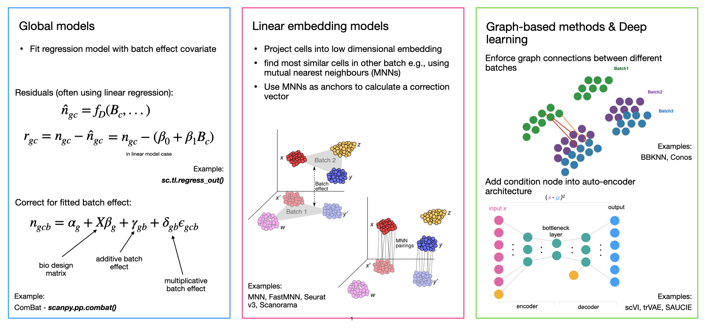
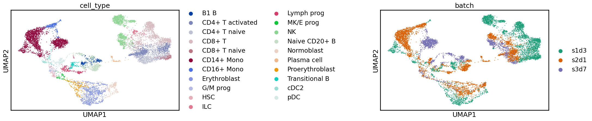
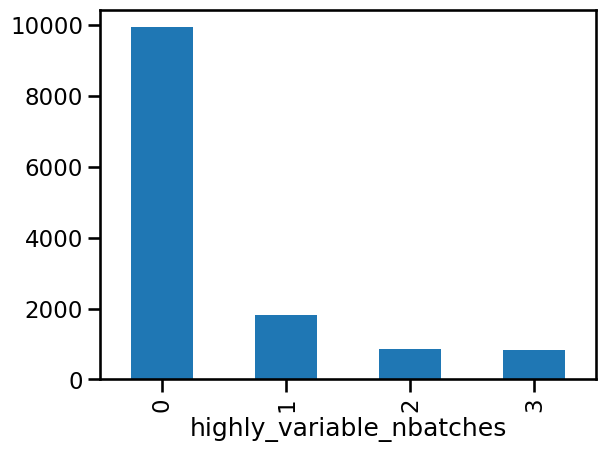
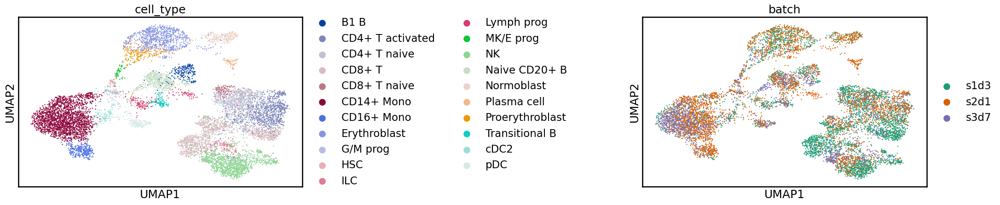
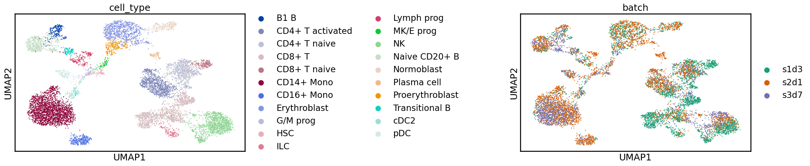
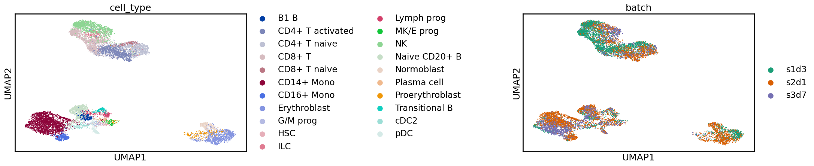
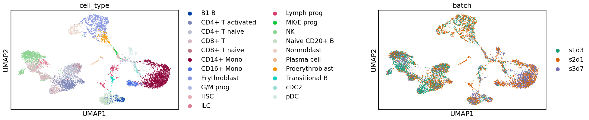
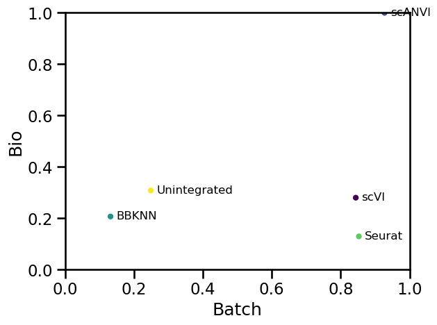
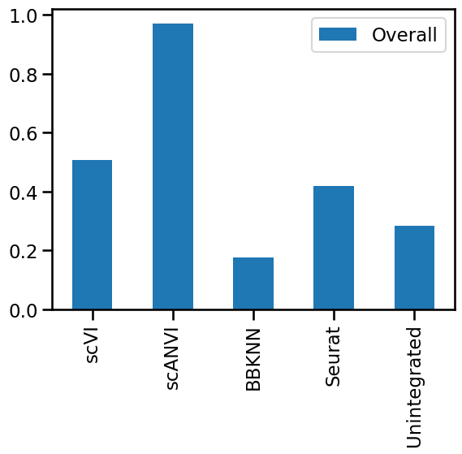

14. 数据整合#
关键要点
在尝试校正批次效应之前，先把你的数据可视化，以评估问题的严重程度。批次效应校正并不总是必要的，它还可能掩盖你所关心的生物学变异。
如果有可用的细胞标签，且生物学变异最为重要，则建议使用能够利用这些标签的方法（如 scANVI）。
考虑在您的数据集中运行几种整合方法，并用 scIB 等指标来评估，从而选用对你的应用场景最稳健的那种整合。
环境设置
安装 conda:
在创建环境之前，请确保 conda 已安装在您的系统中。
保存 yml 内容:
将 yml 选项卡中的内容复制到名为
environment.yml的文件中。
创建环境:
打开终端或命令提示符。
运行以下命令：
conda env create -f environment.yml
激活环境:
创建好环境后，使用以下命令激活它：
conda activate <environment_name>
替换
<environment_name>，名称就是在environment.yml文件中指定的那个。在 yml 文件里，它看起来像这样：name: <environment_name>
验证安装:
通过运行以下命令，检查环境是否创建成功：
conda env list
name: integration
channels:
- conda-forge
- bioconda
- defaults
dependencies:
- conda-forge::python=3.11
- conda-forge::ipykernel=7.1.0
- conda-forge::jupyterlab=4.5.1
- conda-forge::scanpy=1.11.5
- bioconda::anndata2ri=2.0
- bioconda::bbknn=1.6.0
- bioconda::bioconductor-singlecellexperiment=1.28.0
- igraph=1.0.1
- pip=25.3
- python-igraph=1.0.0
- conda-forge::r-base=4.4.3
- r-sessioninfo=1.2.3
- r-seurat=5.4.0
- r-spatstat=3.5_0
- rpy2=3.6.4
- scikit-learn=1.8.0
- scikit-misc=0.5.2
- scvi-tools=1.4.1
- session-info=1.0.0
- pip:
- scib==1.1.7
- lamindb
获取数据和笔记本
本书使用 lamindb，并通过 theislab/sc-best-practices 实例 来存储、共享和加载数据集与笔记本。感谢 Lamin Labs 提供免费托管服务。
安装 lamindb
安装 lamindb Python 软件包：
pip install lamindb
可选择创建 lamin 账户
按照以下 说明 注册并登录。
验证你的设置
运行
lamin connect命令：
import lamindb as ln ln.Artifact.connect("theislab/sc-best-practices").df()
你现在应该看到最多100个存储的数据集。
访问数据集（Artifact）
在 Artifacts 页面 搜索该数据集。
加载一个 Artifact 及其对应的对象：
import lamindb as ln af = ln.Artifact.connect("theislab/sc-best-practices").get(key="key_of_dataset", is_latest=True) obj = af.load()
该对象现在已可在内存中访问，并可用于分析。请调整
ln.Artifact.connect("theislab/sc-best-practices").get("SOMEIDXXXX")后缀以获取相应的版本。访问笔记本（Transform）
在 Transforms 页面 搜索该笔记本。
加载笔记本：
lamin load <notebook url>
这会把笔记本下载到当前工作目录。与
Artifacts类似，你可以调整后缀 ID 来获取旧版本。
14.1. 动机#
在大多数 scRNA-seq 数据分析中，批次效应都是一项核心挑战。批次效应是指由于在不同的组（即“批次”）中处理细胞，而导致测得的表达水平发生的变化。例如，如果两个实验室从同一个队列采集了样本，但这些样本的解离方式不同，就可能产生批次效应。如果实验室 A 优化了它的解离方案，在解离样本中细胞的同时尽量减小对细胞的胁迫，而实验室 B 没有，那么来自 B 组数据中的细胞，很可能会表达更多与胁迫相关的基因（JUN、JUNB、FOS 等，见 [van den Brink et al., 2017]）即使这些细胞在原始组织中本来具有相同的表达谱。一般来说，批次效应的来源多种多样，也难以查明。一些批次效应来源可能是技术性的，例如样品处理方式、实验方案或 测序 深度，但供体变化、组织或采样地点等生物效应也往往被解释为批次效应 [Luecken et al., 2021]。生物因素是否应被视为批次效应取决于实验设计和被问到的问题。消除批次效应对于开展联合分析至关重要，这种分析可以侧重于确定各批次数据中的共同结构，使我们能够进行跨数据集的查询。通常，只有在消除了这些影响之后，才能识别出稀有细胞群，而这些稀有细胞群以前被批次之间的差异所掩盖。允许跨数据集查询，使我们能够提出无法通过分析单个数据集解答的问题，例如: 哪些细胞类型表达 SARS-CoV-2 的侵入因子？这种表达在个体之间又有何差异？ [Muus et al., 2021].
在从组学数据中去除批次效应时，必须做出两个核心选择：(1) 方法及其参数设置；(2) 批次协变量。由于批次效应可能在不同层级（即样本、供体、数据集等）的细胞分组之间产生，批次协变量的选择决定了应保留哪一层级的变异、去除哪一层级的变异。批次分辨率越精细，被去除的效应就越多；然而，精细的批次变异也更可能与有生物学意义的信号相混淆。例如，样本通常来自不同的个体或组织的不同位置，这些效应也许值得研究。因此，批次协变量的选择将取决于你整合任务的目标：你想看到个体之间的差异，还是更关注细胞类型内部的共同变异？最近一项构建人类肺脏整合图谱的工作率先采用了一种基于定量分析的批次协变量选择方法，利用可归因于不同技术协变量的方差来做出这一选择[Sikkema et al., 2022].
14.1.1. 整合模型的类型#
在scRNA-seq中消除批次效应的方法通常包括(最多)三个步骤:
降维
对批次效应建模并将其去除
投射回高维空间
虽然模拟和去除批次效应(步骤2)是任何批量清除方法的核心部分，但许多方法首先将数据投射到一个更低维空间(步骤1),以提高信噪比(见 降维章节),并在该空间进行批次校正，以提高性能(见 [Luecken et al., 2021]). 在第三步中，一种方法可能会在去除拟合出的批次效应后，将数据投射回原始高维特征空间，从而输出一个经过批次校正的基因表达矩阵。
在这三个步骤中，批次效应清除方法各有不同。它们可能采用各种线性或非线性降维方法，线性或非线性批次效应模型，输出不同格式的批次校正数据。总体而言，我们可以将批次效应去除方法分为4类。按照其发展顺序，这些是全局模型、线性嵌入模型、基于图的方法和深度学习方法(图一1)。
全局模型 起源于批量转录组学，把批次效应建模为在所有细胞间一致的（加性和/或乘性）效应。一个常见的例子就是ComBat [Johnson et al., 2007].
线性嵌入模型 是第一个单细胞特定批次清除方法。这些方法经常使用奇异值分解(SVD)的变体来嵌入数据，然后在嵌入中寻找不同批次类似细胞的局部邻域，它们用来以局部自适应（非线性）的方式校正批次效应。这些方法往往利用 SVD 载荷将数据投射回基因表达空间，但也可能只输出一个经过修正的嵌入。这是最常见的方法组，突出的例子包括开创性的互最近邻（MNN）方法 [Haghverdi et al., 2018] (没有降维),Seurat整合 [Butler et al., 2018, Stuart et al., 2019], Scanorama [Hie et al., 2019], FastMNN [Haghverdi et al., 2018], and Harmony [Korsunsky et al., 2019].
基于图的方法 一般是运行速度最快的方法。这些方法使用最近邻图来表示每个批次的数据。批次效应通过强制不同批次的细胞间连接来纠正，然后通过修剪这些强制连边来容许细胞类型构成上的差异。这些方法中最突出的例子是Batch-Balanced k最近邻（BBKNN）方法 [Polański et al., 2019].
深度学习（DL）方法 是最新、也最复杂的批次效应去除方法，通常需要最多的数据才能取得良好性能。大多数深度学习整合方法都是基于自动编码器网络，其中要么在条件变分自编码器（CVAE）中以批次协变量为条件，要么在嵌入空间中拟合一个局部线性校正。典型的 DL 方法包括 scVI [Lopez et al., 2018]、scANVI [Xu et al., 2021] 和 scGen [Lotfollahi et al., 2019]。
有些方法可以利用细胞身份标签，为方法提供一个参考，告诉它哪些生物学变异不应作为批次效应被去除。由于批次效应去除通常是一项预处理任务，这类方法可能并不适用于许多整合场景，因为在这一阶段通常还没有标签可用。
关于批次效应清除方法的更详细的概述可见于 [Argelaguet et al., 2021] 和 [Luecken et al., 2021].

图 I1：不同类型整合方法的概览及示例。14.1.2. 批次去除的复杂性#
scRNA-seq 数据中批次效应的去除，此前被分为两个子任务：批次校正（batch correction）和数据整合（data integration） [Luecken and Theis, 2019]。这两个子任务在所需去除的批次效应的复杂程度上有所不同。批次校正方法处理的是同一实验中各样本之间的批次效应，此时细胞身份的构成是一致的，效应往往近似线性。相比之下，数据整合方法处理的是数据集之间复杂的、往往是嵌套的批次效应——这些数据集可能用不同的实验方案生成，细胞身份也未必在各批次间共享。虽然我们在此对二者加以区分，但值得注意的是，在一般用法中这两个术语常常被混用。鉴于复杂程度上的差异，不同方法在这两个子任务上分别被评测为最优，也就不足为奇了。
14.1.3. 数据整合方法的比较#
此前已有若干基准测试评估过批次校正和数据整合方法的性能。在去除批次效应时，方法可能会过度校正，把有意义的生物学变异连同批次效应一起去除。正因如此，评估整合性能时必须同时考虑批次效应的去除程度与生物学变异的保留程度。
k-近邻批次效应测试（kBET）是第一个用于量化 scRNA-seq 数据批次校正效果的指标。[Büttner et al., 2019]。作者利用 kBET 发现 ComBat 在比较主要为全局模型的同时，在批次校正方面的表现超过了其他方法。在此基础上，最近的两项基准 [Tran et al., 2020] 和 [Chazarra-Gil et al., 2021] 还在批次较少、或生物学复杂度较低的批次校正任务上，对线性嵌入模型和深度学习模型进行了评测。这些研究发现，线性嵌入模型 Seurat [Butler et al., 2018, Stuart et al., 2019] 和 Harmony [Korsunsky et al., 2019] 在简单的批次校正任务上表现良好。
由于数据集的规模和数量，以及场景的多样性，对复杂整合任务做基准测试会带来额外的挑战。最近，一项大型研究使用 14 个指标，在 5 个 RNA 任务和 2 个模拟上，对涵盖各整合方法类别的 16 种方法进行了评测 [Luecken et al., 2021]。虽然表现最好的方法因任务而异，但利用了细胞类型标签的方法在各项任务中总体表现更好。此外，深度学习方法 scANVI（带标签）、scVI 和 scGen（带标签），以及线性嵌入模型 Scanorama 表现最好，尤其是在复杂任务上；而 Harmony 在较简单任务上表现良好。另一个构建 眼部巨型图谱（ocular mega-atlas） 的视网膜数据集整合工作也发现，scVI 优于其他方法 [Swamy et al., 2021]。
14.1.4. 选择整合方法#
尽管整合方法如今已经过广泛的基准测试，但并不存在适用于所有场景的最优方法。一些整合性能指标与评估流程的工具包，例如 scIB 和 batchbench，可用于在你自己的数据上评估整合性能。不过，许多指标（尤其是衡量生物学变异保留程度的那些）需要真实的（ground-truth）细胞身份标签。参数优化或许能把许多方法调到适用于特定任务；但总体而言，Harmony 和 Seurat 一贯适合简单批次校正任务，而 scVI、scGen、scANVI 和 Scanorama 在更复杂的数据整合任务上表现良好。在选择方法时，我们建议首先考虑这些选择。此外，Open Problems 等框架提供了基准测试平台，其中包括一个排行榜，汇总了批次整合等各类任务的结果 [Luecken et al., 2025]。
此外，整合方法的选择还可能取决于所需的输出数据格式（即：你需要的是校正后的基因表达数据，还是一个整合后的嵌入就够了？）。比较稳妥的做法是，在选定某种方法之前，先测试多种方法，并依据对“成功”的量化定义来评估其输出。关于如何选择数据整合方法的详尽指南，可参见 [Luecken et al., 2021].
在本章余下的部分中，我们会演示几种表现最好的方法，并简要展示如何评估整合性能。
让我们静默一些不会影响代码的警告：
import warnings
# This looks for any warning containing this specific text
warnings.filterwarnings("ignore", message=".*encoding metadata.*")
warnings.filterwarnings("ignore", category=DeprecationWarning)
warnings.simplefilter(action="ignore", category=FutureWarning)
warnings.filterwarnings(
"ignore", message=".*The default of observed=False is deprecated.*"
)
现在来设置环境：
# Python packages
import anndata2ri
import bbknn
import lamindb as ln
import matplotlib.pyplot as plt
import numpy as np
import pandas as pd
import scanpy as sc
import scib
import scvi
# R interface
%load_ext rpy2.ipython
anndata2ri.set_ipython_converter()
assert ln.setup.settings.instance.slug == "theislab/sc-best-practices"
ln.track("0VP4jDUT9P3E")
The rpy2.ipython extension is already loaded. To reload it, use:
%reload_ext rpy2.ipython
→ loaded Transform('0VP4jDUT9P3E0000', key='integration.ipynb'), re-started Run('zYZOfUIlcXImvYWR') at 2026-02-16 19:19:58 UTC
→ notebook imports: anndata2ri==2.0 bbknn==1.6.0 lamindb==2.0.1 matplotlib==3.10.8 numpy==2.3.5 pandas==2.3.3 scanpy==1.11.5 scib==1.1.7 scvi-tools==1.4.1 session-info==1.0.0
当前的环境依赖被固定在较旧版本的 Python 和 Scanpy 上，以保证与 BBKNN 的兼容性。在即将把 BBKNN 整合进 Scanpy 库之后，计划进行一次版本升级。
%%R
# R packages
library(Seurat)
14.2. 数据集#
我们用来演示数据整合的数据集，包含若干骨髓单核细胞样本。这些样本最初是为 “Open Problems in Single-Cell Analysis” 2021年NeurIPS比赛 [Lance et al., 2022, Luecken et al., 2022]. 我们使用的是 10x Multiome 方案，它能在同一批细胞中同时测量 RNA 表达（scRNA-seq）和染色质可及性（scATAC-seq）。我们这里使用的数据版本已经过预处理，去除了低质量的细胞。
让我们读入数据集，并使用 scanpy 获取一个 AnnData 对象。
af = ln.Artifact.get(
key="cellular_structure/openproblems_bmmc_multiome_genes_filtered.h5ad",
is_latest=True,
)
adata_raw = af.load()
adata_raw.layers["logcounts"] = adata_raw.X
adata_raw
AnnData object with n_obs × n_vars = 69249 × 129921
obs: 'GEX_pct_counts_mt', 'GEX_n_counts', 'GEX_n_genes', 'GEX_size_factors', 'GEX_phase', 'ATAC_nCount_peaks', 'ATAC_atac_fragments', 'ATAC_reads_in_peaks_frac', 'ATAC_blacklist_fraction', 'ATAC_nucleosome_signal', 'cell_type', 'batch', 'ATAC_pseudotime_order', 'GEX_pseudotime_order', 'Samplename', 'Site', 'DonorNumber', 'Modality', 'VendorLot', 'DonorID', 'DonorAge', 'DonorBMI', 'DonorBloodType', 'DonorRace', 'Ethnicity', 'DonorGender', 'QCMeds', 'DonorSmoker'
var: 'feature_types', 'gene_id'
uns: 'ATAC_gene_activity_var_names', 'dataset_id', 'genome', 'organism'
obsm: 'ATAC_gene_activity', 'ATAC_lsi_full', 'ATAC_lsi_red', 'ATAC_umap', 'GEX_X_pca', 'GEX_X_umap'
layers: 'counts', 'logcounts'
完整的数据集包含69,249个细胞和129,921个特征的测量。表达矩阵有两个版本, counts,其中包含原始计数值，以及 logcounts，其中包含归一化的对数计数（这些值也存储在 adata.X).
The obs 槽中包含几个变量，其中一些是在预处理过程中(用于质量控制)计算出来的，而另一些则包含关于样本的元数据。我们感兴趣的是:
cell_type—— 每个细胞被注释的标签batch—— 每个细胞的测序批次
在真实的分析中，考虑更多变量会很重要，但为了让这里保持简单，我们只看这几个。
我们定义一些变量来保存这些名称，这样就能清楚地看出我们在代码中是如何使用它们的。这也有助于可复现性：因为如果出于任何原因决定修改其中之一，我们可以确保它在整个笔记本中都被一并改掉。
label_key = "cell_type"
batch_key = "batch"
用什么作为批次标签？
如上所述，决定把什么用作数据整合中的“批次”，是整合数据时的核心选择之一。最常见的做法是把每个样本定义为一个批次（正如我们这里所做的），这通常能产生最强的批次校正。然而，样本往往与你可能想要保留的生物学因素相混杂。例如，设想一个从某组织的两个部位采集样本的实验。如果把样本当作批次，那么数据整合方法就会试图消除样本之间的差异，从而也消除了两个部位之间的差异。在这种情况下，更合适的做法可能是用供体作为批次，以消除个体之间的差异，而非部位之间的差异。此外还应考虑后续计划开展的分析。如果你要整合许多数据集，并希望捕捉个体之间的差异，那么数据集本身可能是一个有用的批次协变量。在我们的例子中，与其为每个部位各自生成一批需要分别注释、再相互匹配的聚类，不如让两个部位共用一致的细胞类型标签，然后再检验它们之间的差异。
样本与生物学因素相混杂的问题，可以通过精心的实验设计来缓解：利用多重化（multiplexing）技术把多个生物学样本合并到同一个测序样本中，从而整体上把批次效应降到最低。不过这并不总是可行，而且既需要实验室里额外的处理，也需要额外的计算步骤。
现在，让我们来回顾一下批次及其细胞数。
adata_raw.obs[batch_key].value_counts()
batch
s4d8 9876
s4d1 8023
s3d10 6781
s1d2 6740
s1d1 6224
s2d4 6111
s2d5 4895
s3d3 4325
s4d9 4325
s1d3 4279
s2d1 4220
s3d7 1771
s3d6 1679
Name: count, dtype: int64
数据集中共有 13 个不同的批次。在这次实验中，研究者从一组供体采集了多个样本，并在不同的机构进行测序，因此这里的名称是样本编号（如“s1”）和供体（如“d2”）的组合。为简单起见，同时为了缩短计算时间，我们将选取其中三个样本来使用。
keep_batches = ["s1d3", "s2d1", "s3d7"]
adata = adata_raw[adata_raw.obs[batch_key].isin(keep_batches)].copy()
adata
AnnData object with n_obs × n_vars = 10270 × 129921
obs: 'GEX_pct_counts_mt', 'GEX_n_counts', 'GEX_n_genes', 'GEX_size_factors', 'GEX_phase', 'ATAC_nCount_peaks', 'ATAC_atac_fragments', 'ATAC_reads_in_peaks_frac', 'ATAC_blacklist_fraction', 'ATAC_nucleosome_signal', 'cell_type', 'batch', 'ATAC_pseudotime_order', 'GEX_pseudotime_order', 'Samplename', 'Site', 'DonorNumber', 'Modality', 'VendorLot', 'DonorID', 'DonorAge', 'DonorBMI', 'DonorBloodType', 'DonorRace', 'Ethnicity', 'DonorGender', 'QCMeds', 'DonorSmoker'
var: 'feature_types', 'gene_id'
uns: 'ATAC_gene_activity_var_names', 'dataset_id', 'genome', 'organism'
obsm: 'ATAC_gene_activity', 'ATAC_lsi_full', 'ATAC_lsi_red', 'ATAC_umap', 'GEX_X_pca', 'GEX_X_umap'
layers: 'counts', 'logcounts'
在取子集、选出这些批次之后，我们还剩下 10,270 个细胞。
我们为这些特征存了两种注释，存储在 var:
feature_typesfeature_types - 每个特征的类型（RNA 或 ATAC）gene_id- 与每个特征相关的基因
让我们看看这些特征类型。
adata.var["feature_types"].value_counts()
feature_types
ATAC 116490
GEX 13431
Name: count, dtype: int64
可以看到，这里有超过 10 万个 ATAC 特征，但只有大约 13,000 个基因表达（“GEX”）特征。多种模态的整合是一个复杂的问题，我们将在 多模态一章中介绍；因此现在我们先只取基因表达特征这一子集。我们还会做一次简单的过滤，确保没有计数全为零的特征（这是必要的，因为通过只选取部分样本，我们可能已经把所有表达某个特定特征的细胞都移除了）。
adata = adata[:, adata.var["feature_types"] == "GEX"].copy()
sc.pp.filter_genes(adata, min_cells=1)
adata
AnnData object with n_obs × n_vars = 10270 × 13431
obs: 'GEX_pct_counts_mt', 'GEX_n_counts', 'GEX_n_genes', 'GEX_size_factors', 'GEX_phase', 'ATAC_nCount_peaks', 'ATAC_atac_fragments', 'ATAC_reads_in_peaks_frac', 'ATAC_blacklist_fraction', 'ATAC_nucleosome_signal', 'cell_type', 'batch', 'ATAC_pseudotime_order', 'GEX_pseudotime_order', 'Samplename', 'Site', 'DonorNumber', 'Modality', 'VendorLot', 'DonorID', 'DonorAge', 'DonorBMI', 'DonorBloodType', 'DonorRace', 'Ethnicity', 'DonorGender', 'QCMeds', 'DonorSmoker'
var: 'feature_types', 'gene_id', 'n_cells'
uns: 'ATAC_gene_activity_var_names', 'dataset_id', 'genome', 'organism'
obsm: 'ATAC_gene_activity', 'ATAC_lsi_full', 'ATAC_lsi_red', 'ATAC_umap', 'GEX_X_pca', 'GEX_X_umap'
layers: 'counts', 'logcounts'
由于做了取子集，我们还需要对数据重新做归一化。这里我们只是用每个细胞的总计数做全局缩放来归一化。
adata.X = adata.layers["counts"].copy()
sc.pp.normalize_total(adata)
sc.pp.log1p(adata)
adata.layers["logcounts"] = adata.X.copy()
我们将利用这一数据集来展示整合。
大多数整合方法都需要一个包含所有样本的单一对象，以及一个批次变量（就像我们这里这样）。如果你的每个样本各自是一个独立对象，你可以用 anndata concat() 函数。见 连接教程 更多细节。其他生态系统也有类似的功能。
14.3. 未整合数据#
在进行任何整合之前，始终建议先查看原始数据。这能在一定程度上提示批次效应的大小，以及可能的成因（从而帮助判断应把哪些变量作为批次标签）。对于某些实验，如果样本本就已经重叠，它甚至可能提示并不需要整合。例如，对于来自单一实验室的小鼠或细胞谱系研究，这种情况并不少见——在那里，大多数导致批次效应的变量都可以被控制（也就是“批次校正”这一情形）。
正如前几章所示，我们将进行高变基因（HVG）选择、主成分分析（PCA）和 UMAP 降维。
sc.pp.highly_variable_genes(adata)
sc.tl.pca(adata)
sc.pp.neighbors(adata)
sc.tl.umap(adata)
adata
AnnData object with n_obs × n_vars = 10270 × 13431
obs: 'GEX_pct_counts_mt', 'GEX_n_counts', 'GEX_n_genes', 'GEX_size_factors', 'GEX_phase', 'ATAC_nCount_peaks', 'ATAC_atac_fragments', 'ATAC_reads_in_peaks_frac', 'ATAC_blacklist_fraction', 'ATAC_nucleosome_signal', 'cell_type', 'batch', 'ATAC_pseudotime_order', 'GEX_pseudotime_order', 'Samplename', 'Site', 'DonorNumber', 'Modality', 'VendorLot', 'DonorID', 'DonorAge', 'DonorBMI', 'DonorBloodType', 'DonorRace', 'Ethnicity', 'DonorGender', 'QCMeds', 'DonorSmoker'
var: 'feature_types', 'gene_id', 'n_cells', 'highly_variable', 'means', 'dispersions', 'dispersions_norm'
uns: 'ATAC_gene_activity_var_names', 'dataset_id', 'genome', 'organism', 'log1p', 'hvg', 'pca', 'neighbors', 'umap'
obsm: 'ATAC_gene_activity', 'ATAC_lsi_full', 'ATAC_lsi_red', 'ATAC_umap', 'GEX_X_pca', 'GEX_X_umap', 'X_pca', 'X_umap'
varm: 'PCs'
layers: 'counts', 'logcounts'
obsp: 'distances', 'connectivities'
这会给我们的 AnnData 对象添加若干新内容。其中 var 槽现在包含了均值、离散度，以及选出的可变基因。在 obsp 槽中，存放着我们 KNN 图的距离和连接度（connectivities）；而在 obsm 存放着 PCA 和 UMAP 的嵌入。
我们来绘制 UMAP，并按细胞身份和批次标签给点上色。如果数据集尚未被标注（这种情况很常见），我们就只能依据批次标签来看了。
adata.uns[batch_key + "_colors"] = [
"#1b9e77",
"#d95f02",
"#7570b3",
] # Set custom colours for batches
sc.pl.umap(adata, color=[label_key, batch_key], wspace=1)

通常，在查看这些图时，你会注意到批次之间存在明显的分离。而在本例中，我们看到的情况更为微妙：虽然同一标签的细胞总体上彼此靠近，但批次之间存在一定的偏移。如果我们用这种原始数据来做聚类分析，很可能会得到一些只包含单一批次的聚类，这在注释阶段会很难解释。我们也很可能漏掉稀有细胞类型——它们在任何单个样本中都不够常见，因而无法形成自己的聚类。虽然 UMAP 常常能显示出批次效应，但在看待这些二维表示时，始终要注意不要过度解读。在真实的分析中，你应当用其他方式来确认整合效果，例如检查标记基因的分布。在下文“对你自己的整合做基准测试”一节中，我们会讨论用于量化整合质量的各种指标。
既然我们已经确认存在需要校正的批次效应，就可以着手尝试各种整合方法了。如果各批次彼此完美重叠，或者我们不做校正也能发现有意义的细胞聚类，那就没有必要进行整合。
14.4. 批次感知特征选择#
如 {ref} 前几章所示 预处理: 特性选择，为了降低噪声、缩短处理时间，我们通常会选取一部分基因用于分析。当我们有多个样本时，也采用同样的做法；不过至关重要的一点是，基因选择必须以“感知批次”（batch-aware）的方式进行。这是因为，在整个数据集上都表现出变异的基因，捕捉到的可能是批次效应，而不是我们感兴趣的生物学信号。这样做还有助于选出与稀有细胞身份相关的基因。
例如，如果某一个身份只存在于一个样本中，那么该身份的标记可能并非在所有样本中都是可变的，而是应该在那个样本中存在。
我们可以通过在 scanpy highly_variable_genes() 函数中设置 batch_key 参数，来执行批次感知的高变基因选择。scanpy 随后会分别为每个批次计算 HVG，并通过选取“在最多批次中都高变”的那些基因来合并结果。我们这里使用 scanpy 函数，因为它内置了对批次的感知。对于其他方法，我们就得分别在每个批次上运行，然后手动合并结果。
sc.pp.highly_variable_genes(
adata, n_top_genes=2000, flavor="cell_ranger", batch_key=batch_key
)
adata.var
| feature_types | gene_id | n_cells | highly_variable | means | dispersions | dispersions_norm | highly_variable_nbatches | highly_variable_intersection | |
|---|---|---|---|---|---|---|---|---|---|
| AL627309.5 | GEX | ENSG00000241860 | 112 | False | 0.006533 | 0.775289 | 0.357974 | 1 | False |
| LINC01409 | GEX | ENSG00000237491 | 422 | False | 0.024462 | 0.716935 | -0.126119 | 0 | False |
| LINC01128 | GEX | ENSG00000228794 | 569 | False | 0.030714 | 0.709340 | -0.296701 | 0 | False |
| NOC2L | GEX | ENSG00000188976 | 675 | False | 0.037059 | 0.704363 | -0.494025 | 0 | False |
| KLHL17 | GEX | ENSG00000187961 | 88 | False | 0.005295 | 0.721757 | -0.028456 | 0 | False |
| ... | ... | ... | ... | ... | ... | ... | ... | ... | ... |
| MT-ND5 | GEX | ENSG00000198786 | 4056 | False | 0.269375 | 0.645837 | -0.457491 | 0 | False |
| MT-ND6 | GEX | ENSG00000198695 | 1102 | False | 0.051506 | 0.697710 | -0.248421 | 0 | False |
| MT-CYB | GEX | ENSG00000198727 | 5647 | False | 0.520368 | 0.613233 | -0.441362 | 0 | False |
| AL592183.1 | GEX | ENSG00000273748 | 732 | False | 0.047486 | 0.753417 | 0.413699 | 0 | False |
| AC240274.1 | GEX | ENSG00000271254 | 43 | False | 0.001871 | 0.413772 | -0.386635 | 0 | False |
13431 rows × 9 columns
我们可以看到，现在 var:
highly_variable_nbatches—— 每个基因被判定为高变的批次数目highly_variable_intersection—— 每个基因是否在每个批次中都高变highly_variable—— 在合并各批次的结果后，每个基因是否被选为高变基因
让我们看看每个基因有多少批次是可变的:
n_batches = adata.var["highly_variable_nbatches"].value_counts()
ax = n_batches.plot(kind="bar")
n_batches
highly_variable_nbatches
0 9931
1 1824
2 852
3 824
Name: count, dtype: int64

我们首先注意到，大多数基因并不是高变的。通常情况都是如此，但这也取决于我们要整合的样本之间差异有多大。随着我们加入更多样本，重叠会逐渐减少——只有相对较少的基因能在全部三个批次中都高变。通过选取前 2000 个基因，我们已经选入了所有在两个或三个批次中都出现的 HVG，以及大部分只在一个批次中出现的 HVG。
要使用多少个基因?
这个问题没有明确的答案。我们下面要用到的 scvi-tools 软件包的作者建议选用 1000 到 10000 个基因，但具体取多少要看上下文，包括数据集的复杂程度和批次的数量。此前一篇最佳实践论文中的一项调查 [Luecken and Theis, 2019] 表明，在标准分析中人们通常使用 1000 到 6000 个 HVG。虽然选择较少的基因有助于去除批次效应 [Luecken et al., 2021] （最高变的那些基因往往只刻画了占主导的生物学变异），但我们建议宁可多选一点基因，也不要选得太少，从而冒着把对某种稀有细胞类型、或某条关注通路很重要的基因一并去掉的风险。不过也要注意，基因越多，运行整合方法所需的时间也会越长。
我们将创建一个只有选定基因用于整合的对象。
adata_hvg = adata[:, adata.var["highly_variable"]].copy()
adata_hvg
AnnData object with n_obs × n_vars = 10270 × 2000
obs: 'GEX_pct_counts_mt', 'GEX_n_counts', 'GEX_n_genes', 'GEX_size_factors', 'GEX_phase', 'ATAC_nCount_peaks', 'ATAC_atac_fragments', 'ATAC_reads_in_peaks_frac', 'ATAC_blacklist_fraction', 'ATAC_nucleosome_signal', 'cell_type', 'batch', 'ATAC_pseudotime_order', 'GEX_pseudotime_order', 'Samplename', 'Site', 'DonorNumber', 'Modality', 'VendorLot', 'DonorID', 'DonorAge', 'DonorBMI', 'DonorBloodType', 'DonorRace', 'Ethnicity', 'DonorGender', 'QCMeds', 'DonorSmoker'
var: 'feature_types', 'gene_id', 'n_cells', 'highly_variable', 'means', 'dispersions', 'dispersions_norm', 'highly_variable_nbatches', 'highly_variable_intersection'
uns: 'ATAC_gene_activity_var_names', 'dataset_id', 'genome', 'organism', 'log1p', 'hvg', 'pca', 'neighbors', 'umap', 'batch_colors', 'cell_type_colors'
obsm: 'ATAC_gene_activity', 'ATAC_lsi_full', 'ATAC_lsi_red', 'ATAC_umap', 'GEX_X_pca', 'GEX_X_umap', 'X_pca', 'X_umap'
varm: 'PCs'
layers: 'counts', 'logcounts'
obsp: 'distances', 'connectivities'
14.5. 基于变分自编码器（VAE）的整合#
我们将使用的第一个整合方法是 scVI （single-cell Variational Inference，单细胞变分推断），一种基于条件变分自编码器（conditional variational autoencoder）的方法 [Lopez et al., 2018] 可在 scvi-tools 软件包 [Gayoso et al., 2022]中获得。 变分自编码器 是一类人工神经网络，旨在降低数据集的维度。其中“条件”指的是把这个降维过程以某个特定的协变量（这里就是批次）为条件，使得该协变量不会影响低维表示。在基准测试研究中 scVI 已被证明能在一系列数据集上都表现良好，在批次校正与保留生物学变异之间取得了不错的平衡 [Luecken et al., 2021]. scVI 直接对原始计数（raw counts）建模，因此我们必须向它提供一个计数矩阵，而不是归一化后的表达矩阵。
首先，让我们复制我们的数据集，以便进行这种整合。通常情况下，没有必要这样做，但是由于我们将展示多种整合方法，制作一个拷贝可以更容易地显示每种方法所添加的内容。
adata_scvi = adata_hvg.copy()
14.5.1. 数据准备#
使用 scVI 的第一步，是准备我们的 AnnData 对象。此步骤会存储 scVI 所需的一些信息，比如要使用哪个表达矩阵、批次键（batch key）是什么。
scvi.model.SCVI.setup_anndata(adata_scvi, layer="counts", batch_key=batch_key)
adata_scvi
AnnData object with n_obs × n_vars = 10270 × 2000
obs: 'GEX_pct_counts_mt', 'GEX_n_counts', 'GEX_n_genes', 'GEX_size_factors', 'GEX_phase', 'ATAC_nCount_peaks', 'ATAC_atac_fragments', 'ATAC_reads_in_peaks_frac', 'ATAC_blacklist_fraction', 'ATAC_nucleosome_signal', 'cell_type', 'batch', 'ATAC_pseudotime_order', 'GEX_pseudotime_order', 'Samplename', 'Site', 'DonorNumber', 'Modality', 'VendorLot', 'DonorID', 'DonorAge', 'DonorBMI', 'DonorBloodType', 'DonorRace', 'Ethnicity', 'DonorGender', 'QCMeds', 'DonorSmoker', '_scvi_batch', '_scvi_labels'
var: 'feature_types', 'gene_id', 'n_cells', 'highly_variable', 'means', 'dispersions', 'dispersions_norm', 'highly_variable_nbatches', 'highly_variable_intersection'
uns: 'ATAC_gene_activity_var_names', 'dataset_id', 'genome', 'organism', 'log1p', 'hvg', 'pca', 'neighbors', 'umap', 'batch_colors', 'cell_type_colors', '_scvi_uuid', '_scvi_manager_uuid'
obsm: 'ATAC_gene_activity', 'ATAC_lsi_full', 'ATAC_lsi_red', 'ATAC_umap', 'GEX_X_pca', 'GEX_X_umap', 'X_pca', 'X_umap'
varm: 'PCs'
layers: 'counts', 'logcounts'
obsp: 'distances', 'connectivities'
创建的字段 scVI 前缀为 _scvi。这些是为内部使用而设计的，不应手动修改。来自 scvi-tools 作者给出的一般建议是：在模型训练完成之前，不要对我们的对象做任何改动。在其他数据集上，你可能会看到一条关于“输入表达矩阵包含未归一化计数数据”的警告。这通常意味着你应该检查一下，传给 setup 函数的那一层是否确实包含计数值；不过，如果你的值来自对全长方案数据做基因长度校正、或来自其他不产生整数计数的定量方法，也可能出现这条警告。
14.5.2. 建立模型#
我们现在可以构建一个 scVI 模型对象。除了我们这里使用的 scVI 模型之外， scvi-tools 软件包还包含各种其他模型（我们将使用 scANVI 模型，见下文）。
model_scvi = scvi.model.SCVI(adata_scvi)
model_scvi
SCVI model with the following parameters: n_hidden: 128, n_latent: 10, n_layers: 1, dropout_rate: 0.1, dispersion: gene, gene_likelihood: zinb, latent_distribution: normal. Training status: Not Trained Model's adata is minified?: False
scVI 模型对象包含所提供的AnnData对象以及模型本身的神经网络。您可以看到目前该模型没有经过训练。如果我们想要修改网络的结构，我们可以为模型构建函数提供额外的参数，但在这里我们只是使用默认值。
我们还可以打印一个更详尽的模型描述，该模型向我们显示事物存放在关联的AnnData对象中的位置。
model_scvi.view_anndata_setup()
Anndata setup with scvi-tools version 1.4.1.
Setup via `SCVI.setup_anndata` with arguments:
{ │ 'layer': 'counts', │ 'batch_key': 'batch', │ 'labels_key': None, │ 'size_factor_key': None, │ 'categorical_covariate_keys': None, │ 'continuous_covariate_keys': None }
Summary Statistics ┏━━━━━━━━━━━━━━━━━━━━━━━━━━┳━━━━━━━┓ ┃ Summary Stat Key ┃ Value ┃ ┡━━━━━━━━━━━━━━━━━━━━━━━━━━╇━━━━━━━┩ │ n_batch │ 3 │ │ n_cells │ 10270 │ │ n_extra_categorical_covs │ 0 │ │ n_extra_continuous_covs │ 0 │ │ n_labels │ 1 │ │ n_vars │ 2000 │ └──────────────────────────┴───────┘
Data Registry ┏━━━━━━━━━━━━━━┳━━━━━━━━━━━━━━━━━━━━━━━━━━━┓ ┃ Registry Key ┃ scvi-tools Location ┃ ┡━━━━━━━━━━━━━━╇━━━━━━━━━━━━━━━━━━━━━━━━━━━┩ │ X │ adata.layers['counts'] │ │ batch │ adata.obs['_scvi_batch'] │ │ labels │ adata.obs['_scvi_labels'] │ └──────────────┴───────────────────────────┘
batch State Registry ┏━━━━━━━━━━━━━━━━━━━━┳━━━━━━━━━━━━┳━━━━━━━━━━━━━━━━━━━━━┓ ┃ Source Location ┃ Categories ┃ scvi-tools Encoding ┃ ┡━━━━━━━━━━━━━━━━━━━━╇━━━━━━━━━━━━╇━━━━━━━━━━━━━━━━━━━━━┩ │ adata.obs['batch'] │ s1d3 │ 0 │ │ │ s2d1 │ 1 │ │ │ s3d7 │ 2 │ └────────────────────┴────────────┴─────────────────────┘
labels State Registry ┏━━━━━━━━━━━━━━━━━━━━━━━━━━━┳━━━━━━━━━━━━┳━━━━━━━━━━━━━━━━━━━━━┓ ┃ Source Location ┃ Categories ┃ scvi-tools Encoding ┃ ┡━━━━━━━━━━━━━━━━━━━━━━━━━━━╇━━━━━━━━━━━━╇━━━━━━━━━━━━━━━━━━━━━┩ │ adata.obs['_scvi_labels'] │ 0 │ 0 │ └───────────────────────────┴────────────┴─────────────────────┘
在这里，我们可以确切地看到 scVI分配了哪些信息，包括诸如每个不同批次在模型中如何编码之类的细节。
14.5.3. 训练模型#
该模型将训练给定数量的 epochs，也就是让每个细胞都通过一次网络的训练迭代（epoch）。默认情况下， scVI 使用以下启发式规则来设定 epoch 数。对于少于 20,000 个细胞的数据集，会使用 400 个 epoch；当细胞数超过 20,000 之后，epoch 数会持续减少。其背后的道理是：随着网络在每个 epoch 中看到更多细胞，它能学到的信息量，与用更少细胞、更多 epoch 时学到的相当。
max_epochs_scvi = np.min([round((20000 / adata.n_obs) * 400), 400])
print(max_epochs_scvi)
400
现在我们按选定的 epoch 数训练模型（视你所用的计算机而定，这大约需要 20–40 分钟）。
model_scvi.train()
GPU available: False, used: False
TPU available: False, using: 0 TPU cores
/Users/seohyon/miniconda3/envs/integration/lib/python3.11/site-packages/lightning/pytorch/trainer/connectors/data_connector.py:434: The 'train_dataloader' does not have many workers which may be a bottleneck. Consider increasing the value of the `num_workers` argument` to `num_workers=7` in the `DataLoader` to improve performance.
Epoch 400/400: 100%|██████████| 400/400 [27:37<00:00, 3.98s/it, v_num=1, train_loss=645]
`Trainer.fit` stopped: `max_epochs=400` reached.
Epoch 400/400: 100%|██████████| 400/400 [27:37<00:00, 4.14s/it, v_num=1, train_loss=645]
提前停止
除了设定目标 epoch 数之外，还可以设置 early_stopping=True 训练函数中。这会让 scVI 根据模型的收敛情况来决定是否提前停止训练。停止的具体条件可由其他参数控制。
14.5.4. 提取嵌入#
我们想从训练好的模型中提取的主要结果，是每个细胞的潜在表示（latent representation）。这是一个多维嵌入，其中批次效应已被去除；它的用法与我们分析单个数据集时使用 PCA 维度的方式类似。我们把它存到 obsm 带密钥 X_scvi.
adata_scvi.obsm["X_scVI"] = model_scvi.get_latent_representation()
14.5.5. 计算批次修正的 UMAP#
现在我们像整合之前那样，把数据可视化。我们会计算一个新的 UMAP 嵌入，但这次不是在 PCA 空间里寻找最近邻，而是从校正后的表示出发——它来自 scVI.
sc.pp.neighbors(adata_scvi, use_rep="X_scVI")
sc.tl.umap(adata_scvi)
adata_scvi
AnnData object with n_obs × n_vars = 10270 × 2000
obs: 'GEX_pct_counts_mt', 'GEX_n_counts', 'GEX_n_genes', 'GEX_size_factors', 'GEX_phase', 'ATAC_nCount_peaks', 'ATAC_atac_fragments', 'ATAC_reads_in_peaks_frac', 'ATAC_blacklist_fraction', 'ATAC_nucleosome_signal', 'cell_type', 'batch', 'ATAC_pseudotime_order', 'GEX_pseudotime_order', 'Samplename', 'Site', 'DonorNumber', 'Modality', 'VendorLot', 'DonorID', 'DonorAge', 'DonorBMI', 'DonorBloodType', 'DonorRace', 'Ethnicity', 'DonorGender', 'QCMeds', 'DonorSmoker', '_scvi_batch', '_scvi_labels'
var: 'feature_types', 'gene_id', 'n_cells', 'highly_variable', 'means', 'dispersions', 'dispersions_norm', 'highly_variable_nbatches', 'highly_variable_intersection'
uns: 'ATAC_gene_activity_var_names', 'dataset_id', 'genome', 'organism', 'log1p', 'hvg', 'pca', 'neighbors', 'umap', 'batch_colors', 'cell_type_colors', '_scvi_uuid', '_scvi_manager_uuid'
obsm: 'ATAC_gene_activity', 'ATAC_lsi_full', 'ATAC_lsi_red', 'ATAC_umap', 'GEX_X_pca', 'GEX_X_umap', 'X_pca', 'X_umap', 'X_scVI'
varm: 'PCs'
layers: 'counts', 'logcounts'
obsp: 'distances', 'connectivities'
得到新的 UMAP 表示之后，我们就可以像之前一样，按批次和身份标签给它上色并绘图。
sc.pl.umap(adata_scvi, color=[label_key, batch_key], wspace=1)

这看起来好多了！之前，各个批次彼此分离、错开；现在批次之间的重叠更多了，而且每个细胞身份标签都对应着聚成一团（blob）的点。
在很多情况下，我们本来并没有现成的身份标签，因此从这一步开始，我们会按其他章节所述，继续进行聚类、注释和后续分析。
14.6. 使用细胞标签的 VAE 整合#
在使用 scVI 进行整合时，我们假装自己事先并没有任何细胞标签（尽管我们在图里把它们显示了出来）。这种情形虽然常见，但在某些情况下，我们确实事先就知道一些关于细胞身份的信息。最常见的，就是当我们想把一个或多个公开数据集与某项新研究的数据合并起来的时候。当我们至少拥有部分细胞的标签时，就可以使用 scANVI （single-cell ANnotation using Variational Inference，使用变分推断的单细胞注释） [Xu et al., 2021]。这是 scVI 模型的一个扩展，它既能纳入细胞身份标签信息，也能纳入批次信息。由于有了这份额外信息，它可以在去除批次效应的同时，尽量保留不同细胞标签之间的差异。基准测试表明， scANVI 往往能比 scVI 更好地保留生物学信号，但有时它在去除批次效应方面又没有那么有效 [Luecken et al., 2021]。虽然我们这里有所有细胞的标签，但也有可能使用 scANVI 以半监督的方式，只为一些细胞提供标签。
标签统一
如果你正在使用 scANVI 要整合你已经拥有标签的多个数据集，重要的一点是首先进行 标签统一。这指的是检查正在整合的各数据集之间标签是否一致的过程。例如，某个细胞在一个数据集中可能被注释为“T cell（T 细胞）”，而同一类型的细胞在另一个数据集中却可能被标为“CD8+ T cell”。如何最好地统一（harmonize）标签是一个尚无定论的问题，但这往往需要领域专家的参与。
我们首先创建一个 scANVI 模型对象。注意，因为 scANVI 是对一个已经训练好的 scVI 模型进行精炼，因此我们提供的是 scVI 模型，而不是 AnnData 对象。如果我们还没有训练过 scVI 模型，我们需要先做到这一点。我们还提供了一列 adata.obs，该列既包含我们的细胞标签，也包含对应于“未标注细胞”的那个标签。在本例中，我们所有细胞都有标签，因此只需提供一个占位值（dummy value）。但在大多数情况下，务必检查这一项设置是否正确，以便 scANVI 知道在训练时该忽略哪个标签。
# Normally we would need to run scVI first but we have already done that here
# model_scvi = scvi.model.SCVI(adata_scvi) etc.
model_scanvi = scvi.model.SCANVI.from_scvi_model(
model_scvi, labels_key=label_key, unlabeled_category="unlabelled"
)
print(model_scanvi)
model_scanvi.view_anndata_setup()
ScanVI Model with the following params: unlabeled_category: unlabelled, n_hidden: 128, n_latent: 10, n_layers: 1, dropout_rate: 0.1, dispersion: gene, gene_likelihood: zinb Training status: Not Trained Model's adata is minified?: False
Anndata setup with scvi-tools version 1.4.1.
Setup via `SCANVI.setup_anndata` with arguments:
{ │ 'labels_key': 'cell_type', │ 'unlabeled_category': 'unlabelled', │ 'layer': 'counts', │ 'batch_key': 'batch', │ 'size_factor_key': None, │ 'categorical_covariate_keys': None, │ 'continuous_covariate_keys': None, │ 'use_minified': False }
Summary Statistics ┏━━━━━━━━━━━━━━━━━━━━━━━━━━┳━━━━━━━┓ ┃ Summary Stat Key ┃ Value ┃ ┡━━━━━━━━━━━━━━━━━━━━━━━━━━╇━━━━━━━┩ │ n_batch │ 3 │ │ n_cells │ 10270 │ │ n_extra_categorical_covs │ 0 │ │ n_extra_continuous_covs │ 0 │ │ n_labels │ 22 │ │ n_vars │ 2000 │ └──────────────────────────┴───────┘
Data Registry ┏━━━━━━━━━━━━━━┳━━━━━━━━━━━━━━━━━━━━━━━━━━━┓ ┃ Registry Key ┃ scvi-tools Location ┃ ┡━━━━━━━━━━━━━━╇━━━━━━━━━━━━━━━━━━━━━━━━━━━┩ │ X │ adata.layers['counts'] │ │ batch │ adata.obs['_scvi_batch'] │ │ labels │ adata.obs['_scvi_labels'] │ └──────────────┴───────────────────────────┘
batch State Registry ┏━━━━━━━━━━━━━━━━━━━━┳━━━━━━━━━━━━┳━━━━━━━━━━━━━━━━━━━━━┓ ┃ Source Location ┃ Categories ┃ scvi-tools Encoding ┃ ┡━━━━━━━━━━━━━━━━━━━━╇━━━━━━━━━━━━╇━━━━━━━━━━━━━━━━━━━━━┩ │ adata.obs['batch'] │ s1d3 │ 0 │ │ │ s2d1 │ 1 │ │ │ s3d7 │ 2 │ └────────────────────┴────────────┴─────────────────────┘
labels State Registry ┏━━━━━━━━━━━━━━━━━━━━━━━━┳━━━━━━━━━━━━━━━━━━┳━━━━━━━━━━━━━━━━━━━━━┓ ┃ Source Location ┃ Categories ┃ scvi-tools Encoding ┃ ┡━━━━━━━━━━━━━━━━━━━━━━━━╇━━━━━━━━━━━━━━━━━━╇━━━━━━━━━━━━━━━━━━━━━┩ │ adata.obs['cell_type'] │ B1 B │ 0 │ │ │ CD4+ T activated │ 1 │ │ │ CD4+ T naive │ 2 │ │ │ CD8+ T │ 3 │ │ │ CD8+ T naive │ 4 │ │ │ CD14+ Mono │ 5 │ │ │ CD16+ Mono │ 6 │ │ │ Erythroblast │ 7 │ │ │ G/M prog │ 8 │ │ │ HSC │ 9 │ │ │ ILC │ 10 │ │ │ Lymph prog │ 11 │ │ │ MK/E prog │ 12 │ │ │ NK │ 13 │ │ │ Naive CD20+ B │ 14 │ │ │ Normoblast │ 15 │ │ │ Plasma cell │ 16 │ │ │ Proerythroblast │ 17 │ │ │ Transitional B │ 18 │ │ │ cDC2 │ 19 │ │ │ pDC │ 20 │ │ │ unlabelled │ 21 │ └────────────────────────┴──────────────────┴─────────────────────┘
This scANVI 模型对象，与我们之前看到的 scVI非常相似。如前所述，我们可以修改模型网络的结构，但在这里我们只使用默认参数。
同样，对于训练 epoch 数的选择，我们也有一套启发式规则。注意，这次的 epoch 数比之前少得多，因为我们只是在微调 scVI 而不是从头开始训练整个网络
max_epochs_scanvi = int(np.min([10, np.max([2, round(max_epochs_scvi / 3.0)])]))
model_scanvi.train(max_epochs=max_epochs_scanvi)
INFO Training for 10 epochs.
GPU available: False, used: False
TPU available: False, using: 0 TPU cores
/Users/seohyon/miniconda3/envs/integration/lib/python3.11/site-packages/lightning/pytorch/trainer/connectors/data_connector.py:434: The 'train_dataloader' does not have many workers which may be a bottleneck. Consider increasing the value of the `num_workers` argument` to `num_workers=7` in the `DataLoader` to improve performance.
Epoch 10/10: 100%|██████████| 10/10 [01:06<00:00, 6.74s/it, v_num=1, train_loss=637]
`Trainer.fit` stopped: `max_epochs=10` reached.
Epoch 10/10: 100%|██████████| 10/10 [01:06<00:00, 6.61s/it, v_num=1, train_loss=637]
我们可以从模型中提取新的潜在表示，并像之前对 scVI.
adata_scanvi = adata_scvi.copy()
adata_scanvi.obsm["X_scANVI"] = model_scanvi.get_latent_representation()
sc.pp.neighbors(adata_scanvi, use_rep="X_scANVI")
sc.tl.umap(adata_scanvi)
sc.pl.umap(adata_scanvi, color=[label_key, batch_key], wspace=1)

仅凭 UMAP 表示，很难分辨出 scANVI 和 scVI 但正如下文将看到的，当我们量化整合质量时，各项指标的得分是有差异的。这再次提醒我们，不应过度解读这些二维表示，尤其是在比较不同方法的时候。
14.7. 基于图的整合#
我们接下来要研究的方法是 BBKNN 或“批量平衡 KNN” [Polański et al., 2019]。这是一种与 scVI截然不同的方法：它不像前面那样用神经网络把细胞嵌入到一个批次校正后的空间里，而是改变了 k最近邻（KNN）图的构造方式——这种图用于聚类和嵌入。正如我们在 过去各章中所看到的，标准的 KNN 过程会把每个细胞与整个数据集中最相似的那些细胞连接起来。而 BBKNN 所做的改变，是强制让细胞与来自其他批次的细胞相连。虽然这是一个简单的改动，但它可能相当有效，尤其是在批次效应非常强的时候。不过，由于其输出是一个整合后的图（graph），它在下游的用途比较有限，因为很少有软件包会接受它作为输入。
重要参数 BBKNN 是每个批次中的邻居数目。对此建议的启发式规则是：如果细胞数超过 100,000，就用 25；如果少于 100,000，则用默认值 3。
neighbors_within_batch = 25 if adata_hvg.n_obs > 100000 else 3
neighbors_within_batch
3
使用前 BBKNN 我们首先执行一个PCA,就像我们在构建一个正常的KNN图之前一样。与 scVI （它在这里对原始计数建模）不同，我们从对数归一化（log-normalised）的表达矩阵出发。
adata_bbknn = adata_hvg.copy()
adata_bbknn.X = adata_bbknn.layers["logcounts"].copy()
sc.pp.pca(adata_bbknn)
我们现在可以运行 BBKNN，以替换对 scanpy neighbors() 函数在标准工作流程中的调用。一个重要的区别在于要确保 batch_key 参数设置在 adata_hvg.obs 包含批量标签。
bbknn.bbknn(
adata_bbknn, batch_key=batch_key, neighbors_within_batch=neighbors_within_batch
)
adata_bbknn
AnnData object with n_obs × n_vars = 10270 × 2000
obs: 'GEX_pct_counts_mt', 'GEX_n_counts', 'GEX_n_genes', 'GEX_size_factors', 'GEX_phase', 'ATAC_nCount_peaks', 'ATAC_atac_fragments', 'ATAC_reads_in_peaks_frac', 'ATAC_blacklist_fraction', 'ATAC_nucleosome_signal', 'cell_type', 'batch', 'ATAC_pseudotime_order', 'GEX_pseudotime_order', 'Samplename', 'Site', 'DonorNumber', 'Modality', 'VendorLot', 'DonorID', 'DonorAge', 'DonorBMI', 'DonorBloodType', 'DonorRace', 'Ethnicity', 'DonorGender', 'QCMeds', 'DonorSmoker'
var: 'feature_types', 'gene_id', 'n_cells', 'highly_variable', 'means', 'dispersions', 'dispersions_norm', 'highly_variable_nbatches', 'highly_variable_intersection'
uns: 'ATAC_gene_activity_var_names', 'dataset_id', 'genome', 'organism', 'log1p', 'hvg', 'pca', 'neighbors', 'umap', 'batch_colors', 'cell_type_colors'
obsm: 'ATAC_gene_activity', 'ATAC_lsi_full', 'ATAC_lsi_red', 'ATAC_umap', 'GEX_X_pca', 'GEX_X_umap', 'X_pca', 'X_umap'
varm: 'PCs'
layers: 'counts', 'logcounts'
obsp: 'distances', 'connectivities'
不同于默认 scanpy 函数, BBKNN 不允许指定用于存储结果的键，因此结果总是存储在默认的“neighbors”键下。
我们可以像使用普通 KNN 图那样，使用这个新的整合图来构建 UMAP 嵌入。
sc.tl.umap(adata_bbknn)
sc.pl.umap(adata_bbknn, color=[label_key, batch_key], wspace=1)

与未整合的数据相比，这次整合也有所改善：相同细胞身份的点聚到了一起，不过批次之间仍能看到一些偏移。
14.8. 使用互最近邻（MNN）的线性嵌入整合#
有些下游应用无法接受整合后的嵌入或邻域图，而需要一个校正后的表达矩阵。能够产生这种输出的一种方法，是以下软件包中的整合方法： Seurat [Butler et al., 2018, Satija et al., 2015, Stuart et al., 2019]. Seurat 整合方法属于一类 线性嵌入模型 ，这类模型利用了 互最近邻 （Seurat 称之为 anchors）来校正批次效应 [Haghverdi et al., 2018]。互最近邻（mutual nearest neighbors）是指来自两个不同数据集的细胞对：当把这两个数据集放到同一个（潜在）空间中时，它们互为对方的邻居。找到这些细胞之后，就可以用它们来对齐两个数据集，并校正它们之间的差异。Seurat 在一些评估中也被发现是混合效果最好的方法之一 [Tran et al., 2020].
As Seurat 是一个 R 包，因此我们必须把数据从 Python 转移到 R。这里我们先把 AnnData 准备好以便转换，使它能够被 rpy2 和 anndata2ri.
adata_seurat = adata_hvg.copy()
# Convert categorical columns to strings
adata_seurat.obs[batch_key] = adata_seurat.obs[batch_key].astype(str)
adata_seurat.obs[label_key] = adata_seurat.obs[label_key].astype(str)
# Delete uns as this can contain arbitrary objects which are difficult to convert
del adata_seurat.uns
adata_seurat
AnnData object with n_obs × n_vars = 10270 × 2000
obs: 'GEX_pct_counts_mt', 'GEX_n_counts', 'GEX_n_genes', 'GEX_size_factors', 'GEX_phase', 'ATAC_nCount_peaks', 'ATAC_atac_fragments', 'ATAC_reads_in_peaks_frac', 'ATAC_blacklist_fraction', 'ATAC_nucleosome_signal', 'cell_type', 'batch', 'ATAC_pseudotime_order', 'GEX_pseudotime_order', 'Samplename', 'Site', 'DonorNumber', 'Modality', 'VendorLot', 'DonorID', 'DonorAge', 'DonorBMI', 'DonorBloodType', 'DonorRace', 'Ethnicity', 'DonorGender', 'QCMeds', 'DonorSmoker'
var: 'feature_types', 'gene_id', 'n_cells', 'highly_variable', 'means', 'dispersions', 'dispersions_norm', 'highly_variable_nbatches', 'highly_variable_intersection'
obsm: 'ATAC_gene_activity', 'ATAC_lsi_full', 'ATAC_lsi_red', 'ATAC_umap', 'GEX_X_pca', 'GEX_X_umap', 'X_pca', 'X_umap'
varm: 'PCs'
layers: 'counts', 'logcounts'
obsp: 'distances', 'connectivities'
已经准备好的 AnnData，现在已作为一个 SingleCellExperiment 对象在 R 中可用，这要归功于 anndata2ri。注意，与 AnnData 对象相比，它是转置过来的，所以我们的观测（细胞）现在是列，而变量（基因）现在是行。
%%R -i adata_seurat
adata_seurat
class: SingleCellExperiment
dim: 2000 10270
metadata(0):
assays(3): X counts logcounts
rownames(2000): GPR153 TNFRSF25 ... TMLHE-AS1 MT-ND3
rowData names(9): feature_types gene_id ... highly_variable_nbatches
highly_variable_intersection
colnames(10270): TCACCTGGTTAGGTTG-3-s1d3 CGTTAACAGGTGTCCA-3-s1d3 ...
AGCAGGTAGGCTATGT-12-s3d7 GCCATGATCCCTTGCG-12-s3d7
colData names(28): GEX_pct_counts_mt GEX_n_counts ... QCMeds
DonorSmoker
reducedDimNames(8): ATAC_gene_activity ATAC_lsi_full ... PCA UMAP
mainExpName: NULL
altExpNames(0):
Seurat 用它自己的对象来存储数据。好在作者提供了一个从 SingleCellExperiment 转换的函数。我们只需提供这个 SingleCellExperiment 对象，并告诉 Seurat 哪些 assay（在我们的 AnnData 对象里就是 layer）包含原始计数、哪些包含归一化表达（Seurat 将其存储在名为“data”的槽中）。
%%R -i adata_seurat
seurat <- as.Seurat(adata_seurat, counts = "counts", data = "logcounts")
seurat
An object of class Seurat
2000 features across 10270 samples within 1 assay
Active assay: originalexp (2000 features, 0 variable features)
2 layers present: counts, data
8 dimensional reductions calculated: ATAC_gene_activity, ATAC_lsi_full, ATAC_lsi_red, ATAC_umap, GEX_X_pca, GEX_X_umap, PCA, UMAP
In addition: Warning messages:
1: In asMethod(object) :
sparse->dense coercion: allocating vector of size 1.5 GiB
2: Keys should be one or more alphanumeric characters followed by an underscore, setting key from ATAC_gene_activity_ to ATACgeneactivity_
3: Keys should be one or more alphanumeric characters followed by an underscore, setting key from ATAC_lsi_full_ to ATAClsifull_
4: Keys should be one or more alphanumeric characters followed by an underscore, setting key from ATAC_lsi_red_ to ATAClsired_
5: Keys should be one or more alphanumeric characters followed by an underscore, setting key from ATAC_umap_ to ATACumap_
6: Keys should be one or more alphanumeric characters followed by an underscore, setting key from GEX_X_pca_ to GEXXpca_
7: Keys should be one or more alphanumeric characters followed by an underscore, setting key from GEX_X_umap_ to GEXXumap_
与我们见过的另一些方法不同——那些方法接收单个对象和一个批次键—— Seurat 整合函数需要一个对象列表。我们使用 SplitObject() 函数来创建这个列表。
%%R -i batch_key
batch_list <- SplitObject(seurat, split.by = batch_key)
batch_list
$s1d3
An object of class Seurat
2000 features across 4279 samples within 1 assay
Active assay: originalexp (2000 features, 0 variable features)
2 layers present: counts, data
8 dimensional reductions calculated: ATAC_gene_activity, ATAC_lsi_full, ATAC_lsi_red, ATAC_umap, GEX_X_pca, GEX_X_umap, PCA, UMAP
$s2d1
An object of class Seurat
2000 features across 4220 samples within 1 assay
Active assay: originalexp (2000 features, 0 variable features)
2 layers present: counts, data
8 dimensional reductions calculated: ATAC_gene_activity, ATAC_lsi_full, ATAC_lsi_red, ATAC_umap, GEX_X_pca, GEX_X_umap, PCA, UMAP
$s3d7
An object of class Seurat
2000 features across 1771 samples within 1 assay
Active assay: originalexp (2000 features, 0 variable features)
2 layers present: counts, data
8 dimensional reductions calculated: ATAC_gene_activity, ATAC_lsi_full, ATAC_lsi_red, ATAC_umap, GEX_X_pca, GEX_X_umap, PCA, UMAP
现在我们可以用这个列表，为每一对数据集寻找锚点（anchors）。通常你会先识别出“感知批次”的高变基因（使用 FindVariableFeatures() 和 SelectIntegrationFeatures() 函数）；但由于我们已经做过这一步，于是直接告诉 Seurat 使用对象中的所有特征。
%%R
anchors <- FindIntegrationAnchors(batch_list, anchor.features = rownames(seurat))
anchors
| | 0 % ~calculating
|+++++++++++++++++ | 33% ~02s |++++++++++++++++++++++++++++++++++ | 67% ~01s |++++++++++++++++++++++++++++++++++++++++++++++++++| 100% elapsed=02s
| | 0 % ~calculating |+++++++++++++++++ | 33% ~02m 30s |++++++++++++++++++++++++++++++++++ | 67% ~58s |++++++++++++++++++++++++++++++++++++++++++++++++++| 100% elapsed=02m 46s
An AnchorSet object containing 25352 anchors between 3 Seurat objects
This can be used as input to IntegrateData.
Scaling features for provided objects
Finding all pairwise anchors
Running CCA
Merging objects
Finding neighborhoods
Finding anchors
Found 7195 anchors
Filtering anchors
Retained 5146 anchors
Running CCA
Merging objects
Finding neighborhoods
Finding anchors
Found 4619 anchors
Filtering anchors
Retained 3588 anchors
Running CCA
Merging objects
Finding neighborhoods
Finding anchors
Found 5575 anchors
Filtering anchors
Retained 3942 anchors
Seurat 随后就可以利用这些锚点，计算一个把某个数据集映射到另一个数据集的变换。这个过程会两两进行，直到所有数据集都被合并。默认情况下， Seurat 将确定合并顺序，以便首先将比较相似的数据集合并，但也可以定义此顺序。
%%R
integrated <- IntegrateData(anchors)
integrated
An object of class Seurat
4000 features across 10270 samples within 2 assays
Active assay: integrated (2000 features, 2000 variable features)
1 layer present: data
1 other assay present: originalexp
Merging dataset 3 into 2
Extracting anchors for merged samples
Finding integration vectors
Finding integration vector weights
0% 10 20 30 40 50 60 70 80 90 100%
[----|----|----|----|----|----|----|----|----|----|
**************************************************|
Integrating data
Warning: Layer counts isn't present in the assay object; returning NULL
Merging dataset 1 into 2 3
Extracting anchors for merged samples
Finding integration vectors
Finding integration vector weights
0% 10 20 30 40 50 60 70 80 90 100%
[----|----|----|----|----|----|----|----|----|----|
**************************************************|
Integrating data
Warning: Layer counts isn't present in the assay object; returning NULL
结果是另一个 Seurat 对象，但请注意，现在活动 assay 叫作“integrated”。它包含校正后的表达矩阵，也就是整合的最终输出。
这里我们提取该矩阵，并准备把它传回 Python。
%%R -o integrated_expr
# Extract the integrated expression matrix
integrated_expr <- GetAssayData(integrated)
# Make sure the rows and columns are in the same order as the original object
integrated_expr <- integrated_expr[rownames(seurat), colnames(seurat)]
# Transpose the matrix to AnnData format
integrated_expr <- t(integrated_expr)
print(integrated_expr[1:10, 1:10])
10 x 10 sparse Matrix of class "dgCMatrix"
TCACCTGGTTAGGTTG-3-s1d3 . -0.0005365199 1.032812e-02 -2.653187e-02
CGTTAACAGGTGTCCA-3-s1d3 0.0001382038 -0.1809919666 -1.454901e-02 3.608087e-03
ATTCGTTTCAGTATTG-3-s1d3 -0.0121073019 -0.0634131448 . 2.144075e-02
GGACCGAAGTGAGGTA-3-s1d3 . . 2.972292e-04 .
ATGAAGCCAGGGAGCT-3-s1d3 -0.0139047070 -0.0313151266 . 2.239855e-02
AGTGCGGAGTAAGGGC-3-s1d3 -0.0004299227 -0.0002657828 . -1.871410e-03
CTACCTCAGACACCGC-3-s1d3 -0.0055208619 -0.0398862165 7.182254e-06 8.240408e-03
CTTCAATTCACGAATC-3-s1d3 . -0.0109928444 . 1.935677e-04
CCATTGTGTAGACAAA-3-s1d3 . 0.0171909577 . 5.711312e-05
CCGTTACTCAATGTGC-3-s1d3 0.0139905520 0.0007981117 2.303345e-03 1.356206e-02
TCACCTGGTTAGGTTG-3-s1d3 -0.023237586 0.031938501 -0.003196878 0.01777767
CGTTAACAGGTGTCCA-3-s1d3 0.114149769 -0.013183394 0.038076742 0.80491293
ATTCGTTTCAGTATTG-3-s1d3 -0.054419899 0.010955781 -0.005951631 0.37223307
GGACCGAAGTGAGGTA-3-s1d3 0.002305526 0.011544715 0.011133475 0.02366670
ATGAAGCCAGGGAGCT-3-s1d3 -0.123505735 -0.009382413 0.002153629 -0.07013587
AGTGCGGAGTAAGGGC-3-s1d3 0.035848769 0.013858992 -0.000379393 0.05617137
CTACCTCAGACACCGC-3-s1d3 -0.003837946 0.082027593 -0.001109389 -0.06307770
CTTCAATTCACGAATC-3-s1d3 0.052970709 0.153601548 0.247920321 -0.01143158
CCATTGTGTAGACAAA-3-s1d3 -0.015445186 0.025763467 -0.003632830 0.02040172
CCGTTACTCAATGTGC-3-s1d3 -0.018025403 0.022560138 0.005755798 0.61496229
TCACCTGGTTAGGTTG-3-s1d3 -6.661644e-03 -0.0183198202
CGTTAACAGGTGTCCA-3-s1d3 5.079864e-02 0.0394717096
ATTCGTTTCAGTATTG-3-s1d3 6.600434e-02 0.0009021681
GGACCGAAGTGAGGTA-3-s1d3 7.172704e-04 0.0095352521
ATGAAGCCAGGGAGCT-3-s1d3 1.226039e-01 0.0063816141
AGTGCGGAGTAAGGGC-3-s1d3 -1.830964e-03 0.0008381943
CTACCTCAGACACCGC-3-s1d3 8.559358e-01 0.0102285084
CTTCAATTCACGAATC-3-s1d3 -5.318238e-06 -0.0341661907
CCATTGTGTAGACAAA-3-s1d3 -6.362298e-03 0.0232357004
CCGTTACTCAATGTGC-3-s1d3 -4.910884e-02 0.0317359591
[[ suppressing 10 column names ‘GPR153’, ‘TNFRSF25’, ‘TNFRSF9’ ... ]]
现在我们把校正后的表达矩阵作为一层（layer）存储到我们的 AnnData 对象中。我们还会设置 adata.X 来使用此矩阵。
adata_seurat.X = integrated_expr
adata_seurat.layers["seurat"] = integrated_expr
print(adata_seurat)
adata.X
AnnData object with n_obs × n_vars = 10270 × 2000
obs: 'GEX_pct_counts_mt', 'GEX_n_counts', 'GEX_n_genes', 'GEX_size_factors', 'GEX_phase', 'ATAC_nCount_peaks', 'ATAC_atac_fragments', 'ATAC_reads_in_peaks_frac', 'ATAC_blacklist_fraction', 'ATAC_nucleosome_signal', 'cell_type', 'batch', 'ATAC_pseudotime_order', 'GEX_pseudotime_order', 'Samplename', 'Site', 'DonorNumber', 'Modality', 'VendorLot', 'DonorID', 'DonorAge', 'DonorBMI', 'DonorBloodType', 'DonorRace', 'Ethnicity', 'DonorGender', 'QCMeds', 'DonorSmoker'
var: 'feature_types', 'gene_id', 'n_cells', 'highly_variable', 'means', 'dispersions', 'dispersions_norm', 'highly_variable_nbatches', 'highly_variable_intersection'
obsm: 'ATAC_gene_activity', 'ATAC_lsi_full', 'ATAC_lsi_red', 'ATAC_umap', 'GEX_X_pca', 'GEX_X_umap', 'X_pca', 'X_umap'
varm: 'PCs'
layers: 'counts', 'logcounts', 'seurat'
obsp: 'distances', 'connectivities'
<Compressed Sparse Row sparse matrix of dtype 'float32'
with 14348115 stored elements and shape (10270, 13431)>
现在有了整合的结果，我们就可以计算 UMAP，并像对其他方法那样把它画出来（这一步其实也可以在 R 里完成）。
# Reset the batch colours because we deleted them earlier
adata_seurat.uns[batch_key + "_colors"] = [
"#1b9e77",
"#d95f02",
"#7570b3",
]
sc.tl.pca(adata_seurat)
sc.pp.neighbors(adata_seurat)
sc.tl.umap(adata_seurat)
sc.pl.umap(adata_seurat, color=[label_key, batch_key], wspace=1)

正如我们之前所见，批次混合在了一起，而标签彼此分开。仅凭 UMAP 来挑选某种整合方法是很有诱惑力的，但 UMAP 并不能完整反映整合的质量。在下一节中，我们会介绍一些更严格地评估整合方法的做法。
关于可伸缩性的说明
在运行这些不同的整合方法时，你可能已经注意到，scVI 花的时间最多。虽然这里所示的小数据集确实如此，但 基准结果 显示，scVI 在更大的数据集上具有良好的可扩展性。这主要是因为训练的 epoch 数会随数据集规模增大而相应调整。MNN 类方法通常扩展性没那么好，部分原因在于它们要做多次两两整合：如果你有 20 个批次，就要做 20 次整合，而其他方法可以一次性考虑所有批次。
14.9. 对你自己的整合进行基准测试#
这里展示的方法是根据基准测试结果选择的，尤其参考了 单细胞整合基准项目 [Luecken et al., 2021]。该项目还制作了一个名为 scib 的软件包，可用于运行一系列整合方法，并计算评估时所用的各项指标。在本节中，我们将演示如何利用这个软件包来评估一次整合的质量。
什么是真值（ground truth）？
其中一些指标，尤其是那些评估生物学变异保留程度的指标，需要一个已知的真值（ground truth）作为比较基准。通常这是细胞身份标签，但也可以包括其他信息，例如已知的轨迹。正因为有这一要求，对于一个全新的、尚不清楚应保留何种生物学信号的数据集，整合效果是很难评估的。
scIB 各项指标既可以单独运行，也有一些封装函数可以一次性运行多个指标。这里我们运行其中一部分计算起来较快的指标，使用的是 metrics_fast() 函数。这个函数需要几个参数：原始的未整合数据集、整合后的数据集、一个批次键，以及一个标签键。根据整合方法输出的不同，我们可能还需要提供额外的参数，例如这里就通过 embed 参数指定用于 scVI 和 scANVI 的嵌入。你还可以通过额外的参数来控制某些指标的运行方式。另外请注意，你可能需要检查对象的格式是否正确，以便 scIB 能够找到所需的信息。
我们来为上面做过的每一种整合，以及未整合的数据（在高变基因选择之后），分别运行这些指标。
metrics_scvi = scib.metrics.metrics_fast(
adata, adata_scvi, batch_key, label_key, embed="X_scVI"
)
metrics_scanvi = scib.metrics.metrics_fast(
adata, adata_scanvi, batch_key, label_key, embed="X_scANVI"
)
metrics_bbknn = scib.metrics.metrics_fast(adata, adata_bbknn, batch_key, label_key)
metrics_seurat = scib.metrics.metrics_fast(adata, adata_seurat, batch_key, label_key)
metrics_hvg = scib.metrics.metrics_fast(adata, adata_hvg, batch_key, label_key)
下面是其中一个指标在单次整合上的结果示例：
metrics_hvg
| 0 | |
|---|---|
| NMI_cluster/label | NaN |
| ARI_cluster/label | NaN |
| ASW_label | 0.555775 |
| ASW_label/batch | 0.833656 |
| PCR_batch | 0.000000 |
| cell_cycle_conservation | NaN |
| isolated_label_F1 | NaN |
| isolated_label_silhouette | 0.653710 |
| graph_conn | 0.985660 |
| kBET | NaN |
| iLISI | NaN |
| cLISI | NaN |
| hvg_overlap | 1.000000 |
| trajectory | NaN |
每一行是一个不同的指标，数值表示该指标的得分。分数介于 0 到 1 之间，其中 1 表示表现良好、0 表示表现差（scib 如有需要，也可以为某些指标返回未经缩放的分数）。由于我们这里只运行了那些计算很快的指标，因此有些指标的得分是 NaN 缺失值。另外要注意，有些指标无法用于某些输出格式，这也可能是返回 NaN 值的原因之一。
为了比较各种方法，把所有指标结果汇总到一张表里会很有用。下面这段代码会把它们合并起来，并整理成更便于查看的格式。
# Concatenate metrics results
metrics = pd.concat(
[metrics_scvi, metrics_scanvi, metrics_bbknn, metrics_seurat, metrics_hvg],
axis="columns",
)
# Set methods as column names
metrics = metrics.set_axis(
["scVI", "scANVI", "BBKNN", "Seurat", "Unintegrated"], axis="columns"
)
# Select only the fast metrics
metrics = metrics.loc[
[
"ASW_label",
"ASW_label/batch",
"PCR_batch",
"isolated_label_silhouette",
"graph_conn",
"hvg_overlap",
],
:,
]
# Transpose so that metrics are columns and methods are rows
metrics = metrics.T
# Remove the HVG overlap metric because it's not relevant to embedding outputs
metrics = metrics.drop(columns=["hvg_overlap"])
metrics
| ASW_label | ASW_label/batch | PCR_batch | isolated_label_silhouette | graph_conn | |
|---|---|---|---|---|---|
| scVI | 0.567771 | 0.906278 | 0.854619 | 0.638646 | 0.981818 |
| scANVI | 0.616567 | 0.907695 | 0.747247 | 0.676892 | 0.994919 |
| BBKNN | 0.555469 | 0.847772 | 0.190583 | 0.641923 | 0.958387 |
| Seurat | 0.571231 | 0.915237 | 0.629736 | 0.617306 | 0.988407 |
| Unintegrated | 0.555775 | 0.833656 | 0.000000 | 0.653710 | 0.985660 |
现在我们把所有得分都放在了一张表里，指标作为列、方法作为行。给表格加上渐变配色，可以更容易地看出各分数之间的差异。
metrics.style.background_gradient(cmap="Blues")
| ASW_label | ASW_label/batch | PCR_batch | isolated_label_silhouette | graph_conn | |
|---|---|---|---|---|---|
| scVI | 0.567771 | 0.906278 | 0.854619 | 0.638646 | 0.981818 |
| scANVI | 0.616567 | 0.907695 | 0.747247 | 0.676892 | 0.994919 |
| BBKNN | 0.555469 | 0.847772 | 0.190583 | 0.641923 | 0.958387 |
| Seurat | 0.571231 | 0.915237 | 0.629736 | 0.617306 | 0.988407 |
| Unintegrated | 0.555775 | 0.833656 | 0.000000 | 0.653710 | 0.985660 |
对于某些指标，分数往往落在一个相对较窄的范围内。为了突出方法之间的差异、并把每个指标放到同一标度上，我们对它们做缩放：让表现最差的得 0 分、表现最好的得 1 分，其余的则落在两者之间。
metrics_scaled = (metrics - metrics.min()) / (metrics.max() - metrics.min())
metrics_scaled.style.background_gradient(cmap="Blues")
| ASW_label | ASW_label/batch | PCR_batch | isolated_label_silhouette | graph_conn | |
|---|---|---|---|---|---|
| scVI | 0.201355 | 0.890188 | 1.000000 | 0.358142 | 0.641394 |
| scANVI | 1.000000 | 0.907550 | 0.874363 | 1.000000 | 1.000000 |
| BBKNN | 0.000000 | 0.173035 | 0.223004 | 0.413133 | 0.000000 |
| Seurat | 0.257985 | 1.000000 | 0.736861 | 0.000000 | 0.821743 |
| Unintegrated | 0.005015 | 0.000000 | 0.000000 | 0.610951 | 0.746558 |
现在这些数值能更好地体现方法之间的差异（也与颜色标度更匹配）。不过需要注意的是，缩放后的分数只能用于比较这一组特定整合方法之间的相对表现。如果想再加入一种方法，就得重新做一次缩放。我们也不能断言某次整合一定“好”，只能说它比我们尝试过的其他方法更好。这种缩放会放大方法之间的差异。例如，如果某指标的原始得分是 0.92、0.94、0.96，缩放后就会变成 0、0.5、1.0。这会让第一种方法看起来差得多，尽管它其实只比另外两种略低，而且仍然是个很高的分数。当比较的方法数量较少、且它们的原始得分相近时，这种效应会更明显。你该看原始分数还是缩放后的分数，取决于你想关注的是绝对表现，还是方法之间的表现差异。
评估指标可以分为两类：衡量批次效应去除程度的指标，以及衡量生物学变异保留程度的指标。我们可以对每一类，取该组缩放值的平均，得到一个汇总分数。这种汇总分数若用原始数值来算就没有意义，因为有些指标的得分总是系统性地高于其他指标（因而会对平均值产生更大的影响）。
metrics_scaled["Batch"] = metrics_scaled[
["ASW_label/batch", "PCR_batch", "graph_conn"]
].mean(axis=1)
metrics_scaled["Bio"] = metrics_scaled[["ASW_label", "isolated_label_silhouette"]].mean(
axis=1
)
metrics_scaled.style.background_gradient(cmap="Blues")
| ASW_label | ASW_label/batch | PCR_batch | isolated_label_silhouette | graph_conn | Batch | Bio | |
|---|---|---|---|---|---|---|---|
| scVI | 0.201355 | 0.890188 | 1.000000 | 0.358142 | 0.641394 | 0.843861 | 0.279749 |
| scANVI | 1.000000 | 0.907550 | 0.874363 | 1.000000 | 1.000000 | 0.927304 | 1.000000 |
| BBKNN | 0.000000 | 0.173035 | 0.223004 | 0.413133 | 0.000000 | 0.132013 | 0.206566 |
| Seurat | 0.257985 | 1.000000 | 0.736861 | 0.000000 | 0.821743 | 0.852868 | 0.128992 |
| Unintegrated | 0.005015 | 0.000000 | 0.000000 | 0.610951 | 0.746558 | 0.248853 | 0.307983 |
把这两个汇总分数相互对照地画出来，可以看出每种方法各自的侧重点：有些方法偏向批次校正，而另一些则偏向保留生物学变异。
fig, ax = plt.subplots()
ax.set_xlim(0, 1)
ax.set_ylim(0, 1)
metrics_scaled.plot.scatter(
x="Batch",
y="Bio",
c=range(len(metrics_scaled)),
ax=ax,
)
for k, v in metrics_scaled[["Batch", "Bio"]].iterrows():
ax.annotate(
k,
v,
xytext=(6, -3),
textcoords="offset points",
family="sans-serif",
fontsize=12,
)

在我们这个小示例场景中， BBKNN 明显是表现最差的，在批次去除和生物学保留两方面都得分最低。另外三种方法的批次校正得分相近，其中 scANVI 在生物学保留方面得分最高，其次是 Seurat 和 scVI.
为了得到每种方法的总分，我们可以把这两个汇总分数结合起来。scIB 论文建议按 40% 批次校正、60% 生物学保留来加权，但你也可以根据自己数据集的侧重点采用不同的权重。
metrics_scaled["Overall"] = 0.4 * metrics_scaled["Batch"] + 0.6 * metrics_scaled["Bio"]
metrics_scaled.style.background_gradient(cmap="Blues")
| ASW_label | ASW_label/batch | PCR_batch | isolated_label_silhouette | graph_conn | Batch | Bio | Overall | |
|---|---|---|---|---|---|---|---|---|
| scVI | 0.201355 | 0.890188 | 1.000000 | 0.358142 | 0.641394 | 0.843861 | 0.279749 | 0.505394 |
| scANVI | 1.000000 | 0.907550 | 0.874363 | 1.000000 | 1.000000 | 0.927304 | 1.000000 | 0.970922 |
| BBKNN | 0.000000 | 0.173035 | 0.223004 | 0.413133 | 0.000000 | 0.132013 | 0.206566 | 0.176745 |
| Seurat | 0.257985 | 1.000000 | 0.736861 | 0.000000 | 0.821743 | 0.852868 | 0.128992 | 0.418543 |
| Unintegrated | 0.005015 | 0.000000 | 0.000000 | 0.610951 | 0.746558 | 0.248853 | 0.307983 | 0.284331 |
我们来快速画一张条形图，把整体表现可视化。
metrics_scaled.plot.bar(y="Overall")
<Axes: >

正如我们已经看到的， scANVI 表现最好，其次是 scVI 和 Seurat。必须指出的是，这只是一个示例，演示如何在这个特定数据集上运行这些指标，而不是对这些方法的正式评估。要做正式评估，你应当参考已有的基准测试论文。特别要说明的是，我们这里只运行了少数几种高性能方法和一部分指标。另外要记住，分数是相对于所用方法而言的，因此即便这些方法表现几乎一样好，细微的差异也会被放大。
已有的基准测试给出了一些总体表现良好的方法，但在不同场景下，性能也可能有相当大的波动。对于某些分析，自己对整合做一次评估也许是值得的。scib 软件包让这个过程变得更容易，但它仍然可能是一项不小的工作，需要对真值（ground truth）有充分的了解，并能正确解读各项指标。
14.10. Quiz#
14.11. 会话信息#
14.11.1. Python#
import session_info
session_info.show()
Click to view session information
----- anndata 0.12.7 anndata2ri NA bbknn 1.6.0 lamindb 2.0.1 matplotlib 3.10.8 numpy 2.3.5 pandas 2.3.3 scanpy 1.11.5 scib 1.1.7 scipy 1.16.3 scvi 1.4.1 session_info 1.0.0 -----
Click to view modules imported as dependencies
CoreFoundation NA Foundation NA PIL 12.1.0 PyObjCTools NA absl 2.3.1 aiobotocore 2.26.0 aiohappyeyeballs 2.6.1 aiohttp 3.13.3 aioitertools 0.13.0 aiosignal 1.4.0 annotated_types 0.7.0 annoy NA anyio NA appnope 0.1.4 argcomplete NA arrow 1.4.0 asgiref 3.11.0 asttokens NA attr 25.4.0 attrs 25.4.0 babel 2.17.0 backports NA bionty 2.0.0 botocore 1.41.5 brotli 1.2.0 certifi 2026.01.04 cffi 2.0.0 charset_normalizer 3.4.4 click 8.3.1 colorama 0.4.6 comm 0.2.3 cryptography 46.0.3 cycler 0.12.1 cython_runtime NA dateutil 2.9.0.post0 debugpy 1.8.19 decorator 5.2.1 defusedxml 0.7.1 deprecated 1.3.1 deprecation 2.1.0 dj_database_url NA django 5.2.10 docrep 0.3.2 donfig 0.8.1.post1 dotenv NA executing 2.2.1 fastjsonschema NA fqdn NA frozenlist 1.7.0 fsspec 2025.12.0 gmpy2 2.2.1 google_crc32c NA graphlib NA graphviz 0.21 h11 0.16.0 h2 4.3.0 h5py 3.15.1 hpack 4.1.0 httpcore 1.0.9 httpx 0.28.1 httpx_retries NA hyperframe 6.1.0 idna 3.11 igraph 1.0.0 importlib_metadata NA ipykernel 7.1.0 isoduration NA jedi 0.19.2 jinja2 3.1.6 jmespath 1.0.1 joblib 1.5.3 json5 0.13.0 jsonpointer 3.0.0 jsonschema 4.26.0 jsonschema_specifications NA jupyter_events 0.12.0 jupyter_server 2.17.0 jupyterlab_server 2.28.0 jupytext 1.18.1 jwt 2.10.1 kiwisolver 1.4.9 lamin_utils 0.16.2 lamindb_setup 1.18.1 lark 1.3.1 legacy_api_wrap NA leidenalg 0.11.0 lightning 2.6.0 lightning_utilities 0.15.2 llvmlite 0.46.0 markdown_it 4.0.0 markupsafe 3.0.3 matplotlib_inline 0.2.1 mdit_py_plugins 0.5.0 mdurl 0.1.2 ml_collections 1.0.0 mpl_toolkits NA mpmath 1.3.0 msgpack 1.1.2 mudata 0.3.2 multidict 6.7.0 mypy_extensions NA natsort 8.4.0 nbformat 5.10.4 nbproject 0.11.1 numba 0.63.1 numcodecs 0.16.5 objc 12.1 opt_einsum 3.4.0 optree 0.18.0 orjson 3.11.5 overrides NA packaging 25.0 pandera 0.28.1 parso 0.8.5 patsy 1.0.2 pgtrigger 4.17.0 platformdirs 4.5.1 postgrest 2.24.0 prometheus_client NA prompt_toolkit 3.0.52 propcache 0.3.1 psutil 7.2.1 psycopg2 2.9.11 (dt dec pq3 ext lo64) pure_eval 0.2.3 pyarrow 22.0.0 pycparser 2.22 pydantic 2.12.5 pydantic_core 2.41.5 pydantic_settings 2.12.0 pydev_ipython NA pydevconsole NA pydevd 3.2.3 pydevd_file_utils NA pydevd_plugins NA pydevd_tracing NA pydot 4.0.1 pygments 2.19.2 pynndescent 0.5.13 pyparsing 3.3.1 pyro 1.9.1+ab0491a pythonjsonlogger NA pytz 2025.2 realtime 2.24.0 referencing NA requests 2.32.5 rfc3339_validator 0.1.4 rfc3986_validator 0.1.1 rfc3987_syntax NA rich NA rpds NA rpy2 NA s3fs 2025.12.0 seaborn 0.13.2 send2trash NA six 1.17.0 sklearn 1.8.0 sniffio 1.3.1 socks 1.7.1 sparse 0.17.0 sqlparse 0.5.5 stack_data 0.6.3 statsmodels 0.14.6 storage3 2.24.0 supabase 2.24.0 supabase_auth 2.24.0 supabase_functions NA sympy 1.14.0 testing NA texttable 1.7.0 threadpoolctl 3.6.0 tomllib NA torch 2.9.1 torchgen NA torchmetrics 1.8.2 tornado 6.5.4 tqdm 4.67.1 traitlets 5.14.3 typeguard NA typing_extensions NA typing_inspect NA typing_inspection NA tzlocal NA umap 0.5.9.post2 upath 0.2.6 uri_template NA urllib3 2.6.3 vscode NA wcwidth 0.2.14 webcolors NA websocket 1.9.0 websockets 15.0.1 wrapt 1.17.3 xarray 2025.12.0 yaml 6.0.3 yarl 1.22.0 zarr 3.1.5 zipp NA zmq 27.1.0 zoneinfo NA
----- IPython 9.9.0 jupyter_client 8.7.0 jupyter_core 5.9.1 jupyterlab 4.5.1 ----- Python 3.11.14 | packaged by conda-forge | (main, Oct 22 2025, 22:53:07) [Clang 19.1.7 ] macOS-26.2-x86_64-i386-64bit ----- Session information updated at 2026-02-16 21:10
14.11.2. R#
%%R
sessioninfo::session_info()
─ Session info ───────────────────────────────────────────────────────────────
setting value
version R version 4.4.3 (2025-02-28)
os macOS 26.2
system x86_64, darwin13.4.0
ui unknown
language (EN)
collate C.UTF-8
ctype C.UTF-8
tz Europe/Berlin
date 2026-02-16
pandoc 3.8.3 @ /Users/seohyon/miniconda3/envs/integration/bin/pandoc
quarto NA
─ Packages ───────────────────────────────────────────────────────────────────
package * version date (UTC) lib source
abind 1.4-8 2024-09-12 [1] CRAN (R 4.4.3)
Biobase * 2.66.0 2024-10-29 [1] Bioconductor 3.20 (R 4.4.2)
BiocGenerics * 0.52.0 2024-10-29 [1] Bioconductor 3.20 (R 4.4.2)
cli 3.6.5 2025-04-23 [1] CRAN (R 4.4.3)
cluster 2.1.8.1 2025-03-12 [1] CRAN (R 4.4.3)
codetools 0.2-20 2024-03-31 [1] CRAN (R 4.4.3)
cowplot 1.2.0 2025-07-07 [1] CRAN (R 4.4.3)
crayon 1.5.3 2024-06-20 [1] CRAN (R 4.4.3)
data.table 1.17.8 2025-07-10 [1] CRAN (R 4.4.3)
DelayedArray 0.32.0 2024-10-29 [1] Bioconductor 3.20 (R 4.4.2)
deldir 2.0-4 2024-02-28 [1] CRAN (R 4.4.3)
digest 0.6.39 2025-11-19 [1] CRAN (R 4.4.3)
dotCall64 1.2 2024-10-04 [1] CRAN (R 4.4.3)
dplyr 1.1.4 2023-11-17 [1] CRAN (R 4.4.3)
farver 2.1.2 2024-05-13 [1] CRAN (R 4.4.3)
fastDummies 1.7.5 2025-01-20 [1] CRAN (R 4.4.3)
fastmap 1.2.0 2024-05-15 [1] CRAN (R 4.4.3)
fitdistrplus 1.2-4 2025-07-03 [1] CRAN (R 4.4.3)
future * 1.68.0 2025-11-17 [1] CRAN (R 4.4.3)
future.apply 1.20.1 2025-12-09 [1] CRAN (R 4.4.3)
generics 0.1.4 2025-05-09 [1] CRAN (R 4.4.3)
GenomeInfoDb * 1.42.0 2024-10-29 [1] Bioconductor 3.20 (R 4.4.2)
GenomeInfoDbData 1.2.13 2026-01-09 [1] Bioconductor
GenomicRanges * 1.58.0 2024-10-29 [1] Bioconductor 3.20 (R 4.4.2)
ggplot2 4.0.1 2025-11-14 [1] CRAN (R 4.4.3)
ggrepel 0.9.6 2024-09-07 [1] CRAN (R 4.4.3)
ggridges 0.5.7 2025-08-27 [1] CRAN (R 4.4.3)
globals 0.18.0 2025-05-08 [1] CRAN (R 4.4.3)
glue 1.8.0 2024-09-30 [1] CRAN (R 4.4.3)
goftest 1.2-3 2021-10-07 [1] CRAN (R 4.4.3)
gridExtra 2.3 2017-09-09 [1] CRAN (R 4.4.3)
gtable 0.3.6 2024-10-25 [1] CRAN (R 4.4.3)
htmltools 0.5.9 2025-12-04 [1] CRAN (R 4.4.3)
htmlwidgets 1.6.4 2023-12-06 [1] CRAN (R 4.4.3)
httpuv 1.6.16 2025-04-16 [1] CRAN (R 4.4.3)
httr 1.4.7 2023-08-15 [1] CRAN (R 4.4.3)
ica 1.0-3 2022-07-08 [1] CRAN (R 4.4.3)
igraph 2.1.4 2025-01-23 [1] CRAN (R 4.4.3)
IRanges * 2.40.0 2024-10-29 [1] Bioconductor 3.20 (R 4.4.2)
irlba 2.3.5.1 2022-10-03 [1] CRAN (R 4.4.3)
jsonlite 2.0.0 2025-03-27 [1] CRAN (R 4.4.3)
KernSmooth 2.23-26 2025-01-01 [1] CRAN (R 4.4.3)
later 1.4.5 2026-01-08 [1] CRAN (R 4.4.3)
lattice 0.22-7 2025-04-02 [1] CRAN (R 4.4.3)
lazyeval 0.2.2 2019-03-15 [1] CRAN (R 4.4.3)
lifecycle 1.0.5 2026-01-08 [1] CRAN (R 4.4.3)
listenv 0.10.0 2025-11-02 [1] CRAN (R 4.4.3)
lmtest 0.9-40 2022-03-21 [1] CRAN (R 4.4.3)
magrittr 2.0.4 2025-09-12 [1] CRAN (R 4.4.3)
MASS 7.3-65 2025-02-28 [1] CRAN (R 4.4.3)
Matrix * 1.7-4 2025-08-28 [1] CRAN (R 4.4.3)
MatrixGenerics * 1.18.0 2024-10-29 [1] Bioconductor 3.20 (R 4.4.2)
matrixStats * 1.5.0 2025-01-07 [1] CRAN (R 4.4.3)
mime 0.13 2025-03-17 [1] CRAN (R 4.4.3)
miniUI 0.1.2 2025-04-17 [1] CRAN (R 4.4.3)
nlme 3.1-168 2025-03-31 [1] CRAN (R 4.4.3)
otel 0.2.0 2025-08-29 [1] CRAN (R 4.4.3)
parallelly 1.46.1 2026-01-08 [1] CRAN (R 4.4.3)
patchwork 1.3.2 2025-08-25 [1] CRAN (R 4.4.3)
pbapply 1.7-4 2025-07-20 [1] CRAN (R 4.4.3)
pillar 1.11.1 2025-09-17 [1] CRAN (R 4.4.3)
pkgconfig 2.0.3 2019-09-22 [1] CRAN (R 4.4.3)
plotly 4.11.0 2025-06-19 [1] CRAN (R 4.4.3)
plyr 1.8.9 2023-10-02 [1] CRAN (R 4.4.3)
png 0.1-8 2022-11-29 [1] CRAN (R 4.4.3)
polyclip 1.10-7 2024-07-23 [1] CRAN (R 4.4.3)
progressr 0.18.0 2025-11-06 [1] CRAN (R 4.4.3)
promises 1.5.0 2025-11-01 [1] CRAN (R 4.4.3)
purrr 1.2.0 2025-11-04 [1] CRAN (R 4.4.3)
R6 2.6.1 2025-02-15 [1] CRAN (R 4.4.3)
RANN 2.6.2 2024-08-25 [1] CRAN (R 4.4.3)
RColorBrewer 1.1-3 2022-04-03 [1] CRAN (R 4.4.3)
Rcpp 1.1.0 2025-07-02 [1] CRAN (R 4.4.3)
RcppAnnoy 0.0.22 2024-01-23 [1] CRAN (R 4.4.3)
RcppHNSW 0.6.0 2024-02-04 [1] CRAN (R 4.4.3)
reshape2 1.4.5 2025-11-12 [1] CRAN (R 4.4.3)
reticulate 1.44.1 2025-11-14 [1] CRAN (R 4.4.3)
rlang 1.1.6 2025-04-11 [1] CRAN (R 4.4.3)
ROCR 1.0-11 2020-05-02 [1] CRAN (R 4.4.3)
RSpectra 0.16-2 2024-07-18 [1] CRAN (R 4.4.3)
Rtsne 0.17 2023-12-07 [1] CRAN (R 4.4.3)
S4Arrays 1.6.0 2024-10-29 [1] Bioconductor 3.20 (R 4.4.3)
S4Vectors * 0.44.0 2024-10-29 [1] Bioconductor 3.20 (R 4.4.2)
S7 0.2.1 2025-11-14 [1] CRAN (R 4.4.3)
scales 1.4.0 2025-04-24 [1] CRAN (R 4.4.3)
scattermore 1.2 2023-06-12 [1] CRAN (R 4.4.3)
sctransform 0.4.2 2025-04-30 [1] CRAN (R 4.4.3)
sessioninfo 1.2.3 2025-02-05 [1] CRAN (R 4.4.3)
Seurat * 5.4.0 2025-12-14 [1] CRAN (R 4.4.3)
SeuratObject * 5.3.0 2025-12-12 [1] CRAN (R 4.4.3)
shiny 1.12.1 2025-12-09 [1] CRAN (R 4.4.3)
SingleCellExperiment * 1.28.0 2024-10-29 [1] Bioconductor 3.20 (R 4.4.2)
sp * 2.2-0 2025-02-01 [1] CRAN (R 4.4.3)
spam 2.11-3 2026-01-08 [1] CRAN (R 4.4.3)
SparseArray 1.6.0 2024-10-29 [1] Bioconductor 3.20 (R 4.4.3)
spatstat.data 3.1-9 2025-10-18 [1] CRAN (R 4.4.3)
spatstat.explore 3.6-0 2025-11-22 [1] CRAN (R 4.4.3)
spatstat.geom 3.6-1 2025-11-20 [1] CRAN (R 4.4.3)
spatstat.random 3.4-3 2025-11-21 [1] CRAN (R 4.4.3)
spatstat.sparse 3.1-0 2024-06-21 [1] CRAN (R 4.4.3)
spatstat.univar 3.1-5 2025-11-17 [1] CRAN (R 4.4.3)
spatstat.utils 3.2-0 2025-09-20 [1] CRAN (R 4.4.3)
stringi 1.8.7 2025-03-27 [1] CRAN (R 4.4.3)
stringr 1.6.0 2025-11-04 [1] CRAN (R 4.4.3)
SummarizedExperiment * 1.36.0 2024-10-29 [1] Bioconductor 3.20 (R 4.4.2)
survival 3.8-3 2024-12-17 [1] CRAN (R 4.4.3)
tensor 1.5.1 2025-06-17 [1] CRAN (R 4.4.3)
tibble 3.3.0 2025-06-08 [1] CRAN (R 4.4.3)
tidyr 1.3.2 2025-12-19 [1] CRAN (R 4.4.3)
tidyselect 1.2.1 2024-03-11 [1] CRAN (R 4.4.3)
UCSC.utils 1.2.0 2024-10-29 [1] Bioconductor 3.20 (R 4.4.2)
uwot 0.2.4 2025-11-10 [1] CRAN (R 4.4.3)
vctrs 0.6.5 2023-12-01 [1] CRAN (R 4.4.3)
viridisLite 0.4.2 2023-05-02 [1] CRAN (R 4.4.3)
xtable 1.8-4 2019-04-21 [1] CRAN (R 4.4.3)
XVector 0.46.0 2024-10-29 [1] Bioconductor 3.20 (R 4.4.2)
zlibbioc 1.52.0 2024-10-29 [1] Bioconductor 3.20 (R 4.4.2)
zoo 1.8-15 2025-12-15 [1] CRAN (R 4.4.3)
[1] /Users/seohyon/miniconda3/envs/integration/lib/R/library
* ── Packages attached to the search path.
──────────────────────────────────────────────────────────────────────────────
14.12. 参考文献#
Ricard Argelaguet, Anna S E Cuomo, Oliver Stegle, and John C Marioni. Computational principles and challenges in single-cell data integration. Nature biotechnology, pages 1–14, May 2021. doi:10.1038/s41587-021-00895-7.
Andrew Butler, Paul Hoffman, Peter Smibert, Efthymia Papalexi, and Rahul Satija. Integrating single-cell transcriptomic data across different conditions, technologies, and species. Nature biotechnology, April 2018. doi:10.1038/nbt.4096.
Maren Büttner, Zhichao Miao, F Alexander Wolf, Sarah A Teichmann, and Fabian J Theis. A test metric for assessing single-cell RNA-seq batch correction. Nature methods, 16(1):43–49, January 2019. doi:10.1038/s41592-018-0254-1.
Ruben Chazarra-Gil, Stijn van Dongen, Vladimir Yu Kiselev, and Martin Hemberg. Flexible comparison of batch correction methods for single-cell RNA-seq using BatchBench. Nucleic acids research, 49(7):e42, April 2021. doi:10.1093/nar/gkab004.
Adam Gayoso, Romain Lopez, Galen Xing, Pierre Boyeau, Valeh Valiollah Pour Amiri, Justin Hong, Katherine Wu, Michael Jayasuriya, Edouard Mehlman, Maxime Langevin, Yining Liu, Jules Samaran, Gabriel Misrachi, Achille Nazaret, Oscar Clivio, Chenling Xu, Tal Ashuach, Mariano Gabitto, Mohammad Lotfollahi, Valentine Svensson, Eduardo da Veiga Beltrame, Vitalii Kleshchevnikov, Carlos Talavera-López, Lior Pachter, Fabian J Theis, Aaron Streets, Michael I Jordan, Jeffrey Regier, and Nir Yosef. A Python library for probabilistic analysis of single-cell omics data. Nature biotechnology, February 2022. doi:10.1038/s41587-021-01206-w.
Laleh Haghverdi, Aaron T L Lun, Michael D Morgan, and John C Marioni. Batch effects in single-cell RNA-sequencing data are corrected by matching mutual nearest neighbors. Nature biotechnology, April 2018. doi:10.1038/nbt.4091.
Brian Hie, Bryan Bryson, and Bonnie Berger. Efficient integration of heterogeneous single-cell transcriptomes using Scanorama. Nature biotechnology, May 2019. doi:10.1038/s41587-019-0113-3.
W Evan Johnson, Cheng Li, and Ariel Rabinovic. Adjusting batch effects in microarray expression data using empirical Bayes methods. Biostatistics, 8(1):118–127, January 2007. doi:10.1093/biostatistics/kxj037.
Ilya Korsunsky, Nghia Millard, Jean Fan, Kamil Slowikowski, Fan Zhang, Kevin Wei, Yuriy Baglaenko, Michael Brenner, Po-Ru Loh, and Soumya Raychaudhuri. Fast, sensitive and accurate integration of single-cell data with Harmony. Nature methods, November 2019. doi:10.1038/s41592-019-0619-0.
Christopher Lance, Malte D Luecken, Daniel B Burkhardt, Robrecht Cannoodt, Pia Rautenstrauch, Anna Laddach, Aidyn Ubingazhibov, Zhi-Jie Cao, Kaiwen Deng, Sumeer Khan, Qiao Liu, Nikolay Russkikh, Gleb Ryazantsev, Uwe Ohler, Neurips 2021 Multimodal Data integration competition participants, Angela Oliveira Pisco, Jonathan Bloom, Smita Krishnaswamy, and Fabian J Theis. Multimodal single cell data integration challenge: Results and lessons learned. In Douwe Kiela, Marco Ciccone, and Barbara Caputo, editors, Proceedings of the NeurIPS 2021 Competitions and Demonstrations Track, volume 176 of Proceedings of Machine Learning Research, 162–176. PMLR, 2022.
Romain Lopez, Jeffrey Regier, Michael B Cole, Michael I Jordan, and Nir Yosef. Deep generative modeling for single-cell transcriptomics. Nature methods, 15(12):1053–1058, November 2018. doi:10.1038/s41592-018-0229-2.
Mohammad Lotfollahi, F Alexander Wolf, and Fabian J Theis. scGen predicts single-cell perturbation responses. Nature methods, 16(8):715–721, August 2019. doi:10.1038/s41592-019-0494-8.
Malte D Luecken, Daniel Bernard Burkhardt, Robrecht Cannoodt, Christopher Lance, Aditi Agrawal, Hananeh Aliee, Ann T Chen, Louise Deconinck, Angela M Detweiler, Alejandro A Granados, Shelly Huynh, Laura Isacco, Yang Joon Kim, Dominik Klein, Bony de Kumar, Sunil Kuppasani, Heiko Lickert, Aaron McGeever, Honey Mekonen, Joaquin Caceres Melgarejo, Maurizio Morri, Michaela Müller, Norma Neff, Sheryl Paul, Bastian Rieck, Kaylie Schneider, Scott Steelman, Michael Sterr, Daniel J Treacy, Alexander Tong, Alexandra-Chloe Villani, Guilin Wang, Jia Yan, Ce Zhang, Angela Oliveira Pisco, Smita Krishnaswamy, Fabian J Theis, and Jonathan M Bloom. A sandbox for prediction and integration of DNA, RNA, and proteins in single cells. In Thirty-fifth Conference on Neural Information Processing Systems Datasets and Benchmarks Track (Round 2). January 2022.
Malte D Luecken, M Büttner, K Chaichoompu, A Danese, M Interlandi, M F Mueller, D C Strobl, L Zappia, M Dugas, M Colomé-Tatché, and Fabian J Theis. Benchmarking atlas-level data integration in single-cell genomics. Nature methods, December 2021. doi:10.1038/s41592-021-01336-8.
Malte D Luecken and Fabian J Theis. Current best practices in single‐cell RNA‐seq analysis: a tutorial. Molecular systems biology, June 2019. doi:10.15252/msb.20188746.
Malte D. Luecken, Scott Gigante, Daniel B. Burkhardt, Robrecht Cannoodt, Daniel C. Strobl, Nikolay S. Markov, Luke Zappia, Giovanni Palla, Wesley Lewis, Daniel Dimitrov, Michael E. Vinyard, D. S. Magruder, Michaela F. Mueller, Alma Andersson, Emma Dann, Qian Qin, Dominik J. Otto, Michal Klein, Olga Borisovna Botvinnik, Louise Deconinck, Kai Waldrant, Sai Nirmayi Yasa, Artur Szałata, Andrew Benz, Zhijian Li, Jonathan M. Bloom, Angela Oliveira Pisco, Julio Saez-Rodriguez, Drausin Wulsin, Luca Pinello, Yvan Saeys, Fabian J. Theis, and Smita Krishnaswamy. Defining and benchmarking open problems in single-cell analysis. Nature Biotechnology, 43(7):1035–1040, July 2025. doi:10.1038/s41587-025-02694-w.
Christoph Muus, Malte D Luecken, Gökcen Eraslan, Lisa Sikkema, Avinash Waghray, Graham Heimberg, Yoshihiko Kobayashi, Eeshit Dhaval Vaishnav, Ayshwarya Subramanian, Christopher Smillie, Karthik A Jagadeesh, Elizabeth Thu Duong, Evgenij Fiskin, Elena Torlai Triglia, Meshal Ansari, Peiwen Cai, Brian Lin, Justin Buchanan, Sijia Chen, Jian Shu, Adam L Haber, Hattie Chung, Daniel T Montoro, Taylor Adams, Hananeh Aliee, Samuel J Allon, Zaneta Andrusivova, Ilias Angelidis, Orr Ashenberg, Kevin Bassler, Christophe Bécavin, Inbal Benhar, Joseph Bergenstråhle, Ludvig Bergenstråhle, Liam Bolt, Emelie Braun, Linh T Bui, Steven Callori, Mark Chaffin, Evgeny Chichelnitskiy, Joshua Chiou, Thomas M Conlon, Michael S Cuoco, Anna S E Cuomo, Marie Deprez, Grant Duclos, Denise Fine, David S Fischer, Shila Ghazanfar, Astrid Gillich, Bruno Giotti, Joshua Gould, Minzhe Guo, Austin J Gutierrez, Arun C Habermann, Tyler Harvey, Peng He, Xiaomeng Hou, Lijuan Hu, Yan Hu, Alok Jaiswal, Lu Ji, Peiyong Jiang, Theodoros S Kapellos, Christin S Kuo, Ludvig Larsson, Michael A Leney-Greene, Kyungtae Lim, Monika Litviňuková, Leif S Ludwig, Soeren Lukassen, Wendy Luo, Henrike Maatz, Elo Madissoon, Lira Mamanova, Kasidet Manakongtreecheep, Sylvie Leroy, Christoph H Mayr, Ian M Mbano, Alexi M McAdams, Ahmad N Nabhan, Sarah K Nyquist, Lolita Penland, Olivier B Poirion, Sergio Poli, Cancan Qi, Rachel Queen, Daniel Reichart, Ivan Rosas, Jonas C Schupp, Conor V Shea, Xingyi Shi, Rahul Sinha, Rene V Sit, Kamil Slowikowski, Michal Slyper, Neal P Smith, Alex Sountoulidis, Maximilian Strunz, Travis B Sullivan, Dawei Sun, Carlos Talavera-López, Peng Tan, Jessica Tantivit, Kyle J Travaglini, Nathan R Tucker, Katherine A Vernon, Marc H Wadsworth, Julia Waldman, Xiuting Wang, Ke Xu, Wenjun Yan, William Zhao, Carly G K Ziegler, NHLBI LungMap Consortium, and Human Cell Atlas Lung Biological Network. Single-cell meta-analysis of SARS-CoV-2 entry genes across tissues and demographics. Nature medicine, 27(3):546–559, March 2021. doi:10.1038/s41591-020-01227-z.
Belinda Phipson, Luke Zappia, and Alicia Oshlack. Gene length and detection bias in single cell RNA sequencing protocols. F1000Research, April 2017. doi:10.12688/f1000research.11290.1.
Krzysztof Polański, Jong-Eun Park, Matthew D Young, Zhichao Miao, Kerstin B Meyer, and Sarah A Teichmann. BBKNN: Fast Batch Alignment of Single Cell Transcriptomes. Bioinformatics, August 2019. doi:10.1093/bioinformatics/btz625.
Rahul Satija, Jeffrey A Farrell, David Gennert, Alexander F Schier, and Aviv Regev. Spatial reconstruction of single-cell gene expression data. Nature Biotechnology, 33(5):495–502, April 2015. doi:10.1038/nbt.3192.
Lisa Sikkema, Daniel C Strobl, Luke Zappia, Elo Madissoon, Nikolay S Markov, Laure-Emmanuelle Zaragosi, Meshal Ansari, Marie-Jeanne Arguel, Leonie Apperloo, Christophe Becavin, Marijn Berg, Evgeny Chichelnitskiy, Mei-I Chung, Antoine Collin, Aurore C A Gay, Baharak Hooshiar Kashani, Manu Jain, Theodore Kapellos, Tessa M Kole, Christoph H Mayr, Von Michael Papen, Lance Peter, Ciro Ramirez-Suastegui, Janine Schniering, Chase J Taylor, Thomas Walzthoeni, Chuan Xu, Linh T Bui, Carlo de Donno, Leander Dony, Minzhe Guo, Austin J Gutierrez, Lukas Heumos, Ni Huang, Ignacio L Ibarra, Nathan D Jackson, Preetish Kadur Lakshminarasimha Murthy, Mohammad Lotfollahi, Tracy Tabib, Carlos Talavera-Lopez, Kyle J Travaglini, Anna Wilbrey-Clark, Kaylee B Worlock, Masahiro Yoshida, Tushar J Desai, Oliver Eickelberg, Christine Falk, Naftali Kaminski, Mark A Krasnow, Robert Lafyatis, Marko Z Nikoli, Joseph E Powell, Jayaraj Rajagopal, Orit Rozenblatt-Rosen, Max A Seibold, Dean Sheppard, Douglas P Shepherd, Sarah A Teichmann, Alexander M Tsankov, Jeffrey Whitsett, Yan Xu, Nicholas E Banovich, Pascal Barbry, Thu E Duong, Kerstin B Meyer, Jonathan A Kropski, Dana Pe'er, Herbert B Schiller, Purushothama Rao Tata, Joachim L Schultze, Alexander V Misharin, Martijn C Nawijn, Malte D Luecken, and Fabian J Theis. An integrated cell atlas of the human lung in health and disease. bioRxiv, pages 2022.03.10.483747, March 2022. doi:10.1101/2022.03.10.483747.
Tim Stuart, Andrew Butler, Paul Hoffman, Christoph Hafemeister, Efthymia Papalexi, William M Mauck, 3rd, Yuhan Hao, Marlon Stoeckius, Peter Smibert, and Rahul Satija. Comprehensive Integration of Single-Cell Data. Cell, 177(7):1888–1902.e21, June 2019. doi:10.1016/j.cell.2019.05.031.
Vinay S Swamy, Temesgen D Fufa, Robert B Hufnagel, and David M McGaughey. Building the mega single-cell transcriptome ocular meta-atlas. GigaScience, October 2021. doi:10.1093/gigascience/giab061.
Hoa Thi Nhu Tran, Kok Siong Ang, Marion Chevrier, Xiaomeng Zhang, Nicole Yee Shin Lee, Michelle Goh, and Jinmiao Chen. A benchmark of batch-effect correction methods for single-cell RNA sequencing data. Genome biology, 21(1):12, January 2020. doi:10.1186/s13059-019-1850-9.
Susanne C van den Brink, Fanny Sage, Ábel Vértesy, Bastiaan Spanjaard, Josi Peterson-Maduro, Chloé S Baron, Catherine Robin, and Alexander van Oudenaarden. Single-cell sequencing reveals dissociation-induced gene expression in tissue subpopulations. Nature methods, 14(10):935–936, September 2017. doi:10.1038/nmeth.4437.
Günter P Wagner, Koryu Kin, and Vincent J Lynch. Measurement of mRNA abundance using RNA-seq data: RPKM measure is inconsistent among samples. Theory in Biosciences, 131(4):281–285, December 2012. doi:10.1007/s12064-012-0162-3.
Chenling Xu, Romain Lopez, Edouard Mehlman, Jeffrey Regier, Michael I Jordan, and Nir Yosef. Probabilistic harmonization and annotation of single-cell transcriptomics data with deep generative models. Molecular systems biology, 17(1):e9620, January 2021. doi:10.15252/msb.20209620.
14.13. 贡献者#
我们衷心感谢以下人员的贡献：
14.13.2. 审阅者#
Lukas Heumos